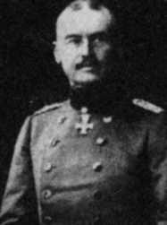
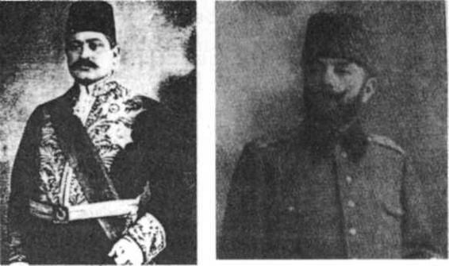

Önsöz
1948'den beri yakın tarihimiz, özellikle Milli Mücadele hakkında anı, belge, bilgi toplamaktaydım.
Milli Mücadeleyi yazmak için birçok hazırlık da yapmıştım.
Ama tarih sırasına uyarak önce Çanakkale'yi yazıp bitirmeliyim diye düşündüm. Çünkü Çanakkale bir dirilişti, Türkün geri dönüşüydü, Milli Mücadelenin ve Cumhuriyet'in habercisi, taç kapısı, arifesiydi, 'yeni Türkiye'nin önsözüydü.
Hazır olduğumu sanarak başladım. Epeyce de yazdım ama sürdüremedim. Hazırlığımın yeterli olmadığını anladım. Kendimi
0 siperlerde yatmış, o ateş altında kalmış, yüzüme kan sıçramış gibi hissetmiyor, Çanakkale'yi yaşamıyordum.
Bu büyük olayın hakkını verecek bir hazırlık gerekti. Çanakkale'yi yazmayı erteledim, hatta bıraktım.
Milli Mücadele'yi yazmaya hazırdım. Bu konudaki neredeyse 50 yıllık birikimim beni 'yaz!' diye zorlayıp duruyordu zaten. Onu her aşamasıyla yaşamaktaydım. Bu nedenle önce Şu Çılgın Türkler'i yazdım.
Sevgili okurlarımdan gelen cesaret verici dilekler, içimde yeniden Çanakkale'yi yazmak isteğini parlattı. Yakın tarihimizi, Çanakkale, Milli Mücadele ve Cumhuriyet'ten oluşan bir üçleme olarak yazmak hevesi uyandırdı.
Bu üçlemeyi yazmayı hem günümüze, hem geleceğimize karşı bir görev, bir borç olarak benimsedim.
Çanakkale Savaşı ve o dönemle ilgili kitaplığımı hızla tamamladım. Bu konudaki dergileri, makaleleri derledim, internette konu ile ilgili başlıca siteleri taradım, birçok bilgi, harita ve resim indirdim.1
Bu bilgileri birçok kez elden geçirdim, fişledim, birbirleriyle karşılaştırdım, o dönemin tam ve gerçek bir resmini görmeye çalıştım. Bir konuda yargıya varmak için konuyla yakından uzaktan ilgili her kaynağa başvurdum. 'Kaynakçanın, Çanakkale olayına ve gerçeğe duyduğum saygıyı, verdiğim büyük önemi, gösterdiğim özeni yansıttığını sanıyorum.
***
Çanakkale hakkındaki ciddi, dürüst, saygıdeğer araştırmaların dışında üç tür yaklaşım var.Bunların üzerinde biraz durmak istiyorum.
Birinci yaklaşım, Çanakkale'yi M. Kemal'siz, M. Kemal'i yok sayarak anlatmaya yelteniştir. Bu yaklaşımla yazılmış yazılar, bazı uyduruk kitap ve romanlar, ayrıca bu nitelikte cd'ler de var. Bu cd'ler öğrencilere, halka ücretsiz dağıtılıyormuş. Utandırıcı bir durum. Bile bile gerçeğe ihanet ediyor, tarihi kirletiyorlar. Bunları yazanların, yaptıranların kimler olduğu, amaçlarının ne olduğu, yaptıkları işin niteliğinden belli.2
Dünyanın bildiği, on binlerce belge ile kanıtlı gerçekleri değiştirmeye, çarpıtmaya cüret eden bu insanlar, ellerine fırsat geçse acaba daha neler yaparlar?
Bir gençlik yalanla dolanla yetiştirilip eğitilir mi? Bu gençlikten kime hayır gelir?
Allah bu güzel milleti ve ülkeyi cahilin, yalancının ve sahte tarihçinin şerrinden ve iktidarından korusun!
İkincisi: Çanakkale'de M. Kemal'in rolünü küçültmeye çalışmak. Bu çizgide birkaç yazar var. Bunlar
"Çanakkale'de M. Kemal yoktu" diyemiyorlar, bu kadar büyük yalanı göze alamıyorlar ama M.
Kemal'in Çanakkale zaferindeki rolünü bin dereden su getirerek, gülünç olmayı göze alarak küçültmeye, önemsizleştirmeye, dikkatten kaçırmaya çalışıyorlar. Bunlar gerçeğe saygısız, maksatlı, bilgisiz, zavallı, küçük kalemler. Sahte tarihçilere ve onların karanlık amaçlarına hizmet ediyorlar.
Üçüncü tür yaklaşım, Çanakkale'yi bir mucizeler, kerametler sergisi halinde anlatmak.
Bu hikâyelere bakılırsa Çanakkale Savaşı askeri bir zafer değil. Komutanların, subayların ve Mehmetçiklerin önemli bir rolleri yok. Bunlara göre savaşı, komutanlar, dövüşenler, can verenler değil, ilahi, gizli güçler, veliler, erenler, dervişler kazanmış. Yaygın bir örnek vereyim.
Nusrat mayın gemisiyle dökülen 26 mayın ile ilgili uydurma hikâyelerin biri de Mehmet Gençcan'ın Çanakkale Savaşlarından Menkıbeler adlı kitabında bulunuyor (s.23 vd.). Bazı ifadelerini koruyarak özetliyorum. Yazar savaşa Allah'ı da katıyor:
"Cevat Paşaya rüyasında Allah tarafından buyruldu ki:
'Ey Cevat, sen Müslüman Türk topraklarının kumandanısın. Bu topraklar üzerinde yaşayan sizler, benim kelamıma hürmet ve tazim edersiniz. Size müjdeler olsun ki yakında zafere müyesser olacaksınız. Deniz üzerine bak.'"
Cevat Paşa dönüp denize bakar, denizin üstü yoğun bir nurla kaplıdır. O nurlu dalgalar arasında çiçeklerle bezenmiş kef ve vav harflerini görür, uyanır. Bu ilahi işaretin anlamını çözemez.
Kilitbahir'de kızının mezarını ziyaret ederken rüyasında aşina olduğu sesi (Allah'ın sesini) burada da işitir:
"Ey Cevat. Depolardaki 26 mayını denize döşe. Türke Türkten başka dost yoktur."
Ne yapılması gerektiğini yüce Allah Cevat kuluna Türkçe olarak apaçık söylüyor. Ama Cevat Paşa nedense anlamıyor. Neyse ki karşısına pir yüzlü bir zat çıkar ve rüyayı yorumlar, ebcet hesabıyla3 kef ve vav harflerinin 26 demek olduğunu açıklar, sonunda da der ki:
"Bu 26 mayını hemen denize döşe ki zaferinize sebep olsun."
Yüce Allah emretmiş, pir yüzlü zat da doğrulamış. Cevat Paşanın hemen gereğini yapmaya koşması beklenmez mi? Hayır, koşmuyor. Hiç telaşı yok. Eve geliyor. İftar ediyor. İftar ederken olayı eşine anlatıyor. Allah'tan eşi akıllı. Hemen Paşayı uyarıyor: "Mayın Grup Komutanından meseleyi öğren!
Depolarda kaç mayın var?"
Paşa eşi de böyle olmalı! Bunun üzerine Müstahkem Mevki Komutanı Cevat Paşa nihayet ayılıp harekete geçiyor, Mayın Grup Komutanını çağırıyor, depoda 26 mayın olduğunu öğreniyor ve bunların döşenmesi için emir veriyor...
Nusrat mayın gemisiyle dökülen 26 mayın olayının içyüzü meğerse bu imiş !
M. Gençcan'ın kitabında Çanakkale Savaşına hiçbir güzellik, derinlik, yücelik, değer katmayan, inceliği olmayan bunun gibi bir hayli uydurma hikâye, daha doğru deyişle hurafe var. Bu kitabı kim yayımlamış dersiniz?
1990'da Gençlik ve Halk Dizisinin 50. kitabı olarak, TC Kültür Bakanlığı! Kitabın önsözünde ve arka kapağında özetle şöyle deniliyor: "Bu olayları, resmi ve ilmi tarih söylemez, söyleyemez. Bunlar tarihi olayların arka planıdır."
Dev Osmanlı Devletini ilkelleştiren, çağdışı hale getiren, ölümüne yol açan, akla ve gerçeğe saygısız Ortaçağ kafası işte bu. Bu kafanın Türkiye Cumhuriyeti Kültür Bakanlığında da kendine yer edinebilmiş olması çok düşündürücü.
Aynı hurafe biraz farklı olarak bir Gelibolu rehberinde de yer alıyor.4
Yazar hurafeye bir ön bilgi vererek başlıyor, özetleyerek aktarıyorum: "Boğaz'da 377 mayın bulunmaktaydı. Düşman mayın tarama gemileri ile Boğaz'da aralıksız olarak mayın tarıyordu. Müstahkem Mevki Komutanlığına gelen rapora göre artık Çanakkale Boğazı'nda hiçbir mayın kalmamıştı.
Harekâtın yapılacağı sabah düşman filosu Boğaz'dan gönül rahatlığı ile geçebilecekti." (s.198) Mayınların temizlenmiş olduğu hakkındaki bu iddianın gerçekle hiç ilgisi yok. Yazar hurafeyi önemsetmek için düpedüz uyduruyor. Düşman Kepez'le Geçit arasındaki 10 hattan sadece birini temizleyebilmiştir. 9 hat sapasağlam durmaktaydı. Durmasa düşman ilerleyip geçerdi zaten. Yazar şöyle devam ediyor:
"Ama düşmanların bilemedikleri şey yüce makamlarda hangi planların yapıldığıydı."
'Yüce makamlar', olağanüstü, gizli, ilahi güçler demek. Çünkü bunlar devreye girmeden Müstahkem Mevki Komutanı da, karargâhı da gerekli yere mayın dökmeyi akıl edemiyor. Yazar bu ön bilgiden sonra bildiğiniz hurafeyi anlatıyor: Cevat Paşa rüya görüyor, sonra ilahi ses, derken denizi kaplayan nur, kef ve vav harfleri, bunu yorumlayan nur yüzlü ihtiyar ve 26 mayının denize dökülmesi! Bu mayınların nereye dökülmesi gerektiğini Cevat Paşa sonunda akıl edebiliyor. Karanlık Limana döktürüyor.
Düşman donanması 377 mayından temizlenmiş Boğaz'ı düpedüz ilerleyip geçmiyor, nedense kuytu koydan geçiyor, mayınlar patlıyor, zaferi kazanıyoruz.
O müthiş 18 Mart deniz zaferi böyle bir hurafeye indirgeniyor.
Bu kitapta akla ziyan daha bir sürü hurafe, abartı, yanlış, saptırılmış bilgi var.
Aynı hurafeyi bir başka yazar da kitabına almış, gerçekmiş gibi yansıtıyor. Bu yazarın tarih öğretmeni olması durumu daha trajikleştiriyor.5
Allah'ın yardım edeceğine, ettiğine inanmak, güvenmek başka şey, ettiğini kanıtlamak için böyle hikâyeler uydurmak başka şey.5a
Allah'ın bizim yalanlarımıza ihtiyacı yoktur!
Böylesi rehberler, kitaplar Gelibolu'daki şehitliklerde satılıyor. Kafileler halinde çocuklar, gençler Gelibolu'ya getiriliyor, şehitlikler gezdirilirken özel rehberler genç beyinleri bu hurafelerle yıkıyorlar.
Gerçek saklanıyor, M. Kemal'in adı bile ağızlara alınmıyor. Bu insancıklar Çanakkale Savaşıyla ilgili gerçekler hakkında hiçbir şey öğrenmeden, hurafelerin yarattığı zihin bulanıklığı içinde Gelibolu'dan ayrılıyorlar. Gün gelecek bu bilgi ve kafayla Türkiye'yi yönetmeye heveslenecekler. Belki de asker olmak isteyecekler.
Milli Park yönetimi hiçbir önlem almıyor. Gelibolu bir sömürü alanı ve zevksiz bir panayır halinde. O
görkemli zafer, o kutsal toprak bunu hak etmiş değil. Tarihe saygılı ve zevkli birileri Gelibolu'ya ve Orhaniye çevresine kesinlikle sahip çıkmalı.
Bu ve benzeri hikâyelerin bir teki bile savaş sırasında, savaş ertesinde, yakın zamanlara kadar herhangi bir anıda, araştırmada, belgede, raporda, makalede, mektupta, haberde, söylentide yer al-mıyor. Hiçbirinin tanığı, duyanı yok.
Yani hiçbiri gerçek değil. Apaçık uydurma.
Sevgili okurlarım!
Halk muhayyilesi bir zaferi süslemek, yüceltmek için bazı olağanüstü hikâyeler yaratabilir. Bu tıpkı türkü yakmak gibi doğal,
güzel, masum bir şeydir. Bunlara menkıbe denilir. Gerçek olmadığı bilinir. Bu nedenle tarih kitaplarında yer almaz. Ancak edebiyat ve halkbilimi bakımından bir değer taşır. Halkın yarattığı birkaç menkıbe var ki onlara ben de kayıtsız kalmadım.
Ama aktardığım bu örnekler, gerçek olmadığı gibi halk yaratısı menkıbe de değil.
Ne bunlar?
Bunlar, yazanlar tarafından yakın zamanlarda, maksatlı olarak uydurulmuş hikâyeler, sahte menkıbeler. Bu durum şöyle özetlenebilir: Çanakkale üzerine menkıbe mi, uydur uydur söyle!
Bunlara göre Çanakkale askeri bir zafer değil, mucizeler sergisi. Askeri bir anlamı, değeri, yüceliği yok. Şehitler boşuna ölmüş. Askeri tarih kitapları boşuna yazılmış.
Bu sahte menkıbeler, uyduruk hikâyeler Çanakkale zaferini basitleştiriyor, masallaştırıyor, gerçek olmaktan uzaklaştırıyor, büyüklüğünü, anlamını zedeliyor, kahramanların, milletin hakkını yiyor, daha önemlisi, zaferin, dirilişin gerçek nedenlerini örtbas ediyor.
Hurafecilik Allah'la yetinmiyor, Çanakkale Savaşı'na Hazret-i Peygamber'i de katıyor.6 Hazret-i Peygamber 1915 yılında, Çanakkale Savaşı sırasında türbedarının rüyasına girerek demişmiş ki:
"Ben şimdi Medine'mde değilim. Çanakkale'deyim. Çok zor durumda olan asker evlatlarımı yalnız bırakmaya gönlüm razı olmadı. Şimdi onlara yardım ediyorum."7
Bu da yetmiyor. Mehmet Gençcan "Çanakkale'ye Anadolu'dan alay alay, tabur tabur erenler, veliler ordusunun geldiğini" de ekliyor.8
İnsanın sorası geliyor:
Bir:
Yüce Allah, Hazret-i Peygamber, erenler ve veliler, iki yüz yıldan beri yenilip duran Osmanlı Devletine ve ordularına neden böyle yardım etmediler? Rusya ile savaşlarda, hele Balkan Savaşında acaba neden hiç yardımcı olmadılar? Sarıkamış'ta, Süveyş'te, Filistin'de, Kudüs'te, Suriye'de, Irak'ta, Bağdat'ta, Musul'da niye hiç yardıma koşmadılar?
Neden yalnız Çanakkale Savaşı'nda ordumuza yardımcı oldular, mucizeler, harikalıklar yarattılar, öbür cephelerde hiç yardımcı olmadılar?
Soru iki:
Allah'ın taraf olduğu bir savaş 9 ay sürer mi? Yani İngilizler ve Fransızlar yüce Allah'a 9 ay kafa tutabilecek kadar güçlü müydü-ler? Bunu düşündürmek Allah'a saygısızlık, kudretine inançsızlık olmuyor mu? Yüce Allah, hurafecilerin anlattığı gibi savaşa katılsaydı, savaş bu kadar uzar mıydı?
Bir saniyede bitmez miydi?
Sorulara devam ediyorum.
Üç:
Menkıbelerde anlatılan onca mucizeye rağmen, 3 yıl sonra yenildik, İngiliz ve Fransızlar 1918
Kasımında Gelibolu'yu, Çanakkale'yi ve düşmanın ele geçirmemesi için yüz bine yakın şehit verdiğimiz İstanbul'u işgal ettiler.
Bu durumu nasıl yorumlayacağız?
O hurafeler neydi, bu acı, zavallı sonuç ne? Böylece düşman, yalnız ordularımızı değil, hurafecilerin Çanakkale Savaşı'na sürekli katıldığını ileri sürdükleri yüce Allah'ı, Hazret-i Peygamber'i, velileri, erenleri, dervişleri, nur yüzlü ulu kişileri de yenmiş mi oldu?
Hurafelere inanırsanız, evet!
Önünü ardını düşünmeden hurafe uydurmanın sonu buna varır. Allah'a saygısızlığa, küçük düşürmeye kadar uzanır, Allah'ı İngilizlere yenilmiş gösterir.
Ama tabii ne bu hurafeler doğru, ne de bu sonuç.
Bu hurafeleri üreten kafa hiçbir çağda çağdaş değildir. Görkemli Osmanlı Devleti'ni yiyip bitiren, acınacak duruma düşüren bu kafadır. Şimdi Cumhuriyet aydınlığını karartmaya çalışıyor.
Bu hurafelere ve bu hurafeci kafalara, bu akla, sağduyuya, gerçeklere aykırı anlayışa, tarihçilerden, bilim adamlarından önce gerçek dindarlar, özellikle de Türkiye Cumhuriyeti Diyanet İşleri Başkanlığı karşı çıkmalı.
Hurafe beyni uyuşturur.
Dini de, gerçeği de, masala çevirir.
Bilimi, bilim anlayışını öldürür.
Çanakkale konusunda hurafeciliğe son verileceğini ummak istiyorum. Kitapların hurafelerden temizlenerek yeniden basılmasını diliyorum. Milli Park yönetiminden, şehitliklerin ve anıtların, eğitimli, bilgili, dürüst rehberler eşliğinde gezilmesini sağlamasını, bu işi ciddi denetim altında tutmasını rica ediyorum.9
Çanakkale'nin hurafeye, yalana, abartıya, bulutlara, sislere, rüyalara, keflere, vavlara, kısacası uydurma olağanüstülüklere ihtiyacı yoktur.
Kendi olağanüstüdür.
İnançlılar bu olağanüstülükte birçok ilahi anlamlar, işaretler bulabilir. Hurafeler uydurmaya hiç gerek yok!
Uyduruk tarihle uyduruk gençlik yetişir. Uyduruk gençlik de güçlü yabancıyı 'efendi' bilen, işgalcinin elini öpen sömürge gençliği, büyüyünce de sömürge yöneticisi, sömürge politikacısı, sö-
mürge öğretmeni, sömürge işadamı, sömürge yazarı, sömürge tarihçisi olur.
Çanakkale hakkında dördüncü tür diyeceğim bir yaklaşım daha var. Ona da değinmeliyim. Bu yaklaşımı abartı diye özetleyebiliriz. Birinci örnek:
Birçok yazı ve konuşmada şehit sayısı 250.000'den aşağı düşmüyor. Bu, abartılı, gerçeğe aykırı bir sayı. Doğru değil. Ama bu yanlışa Çanakkale ile ilgili her anmada, törende, seminerde rastlanıyor.
Devlet adına konuşanlar bile bu yanlışta direniyorlar. Gerçek sayıları son bölümde vereceğim.
İkinci örnek:
Çanakkale'yi Milli Mücadeleyi gölgede bırakacak, neredeyse silecek kadar abartmak. Hayır!
Taşları doğru yerine koymalıyız.
Çanakkale'nin, tarihin uğursuz akışını durdurarak, geciktirerek Milli Mücadeleye zaman ve millete özgüven kazandırdığı, Kuva-yı Milliye ruhunu hazırladığı doğrudur. Ama bu uğursuz akışı geri çeviren Milli Mücadele'dir.
Çanakkale'de emperyalistleri elimizden kaçırmıştık. Milli Mücadele'de denize döktük, galipleri Lozan'ı imzalamak zorunda bıraktık, üzerimizdeki bütün ipotekleri kaldırdık. Milli Mücadele yalnız bir Kurtuluş Savaşı değil, Çanakkale'nin de görkemli bir rövanşıdır.
Çanakkale, Milli Mücadele ve Cumhuriyet, bir büyük sürecin, biri ötekine milyonlarca can ve kan damarıyla bağlı üç büyük aşamasıdır. Bunları birbirinden ayırmaya, maksatlı olarak karşılaştırmaya kalkışmak, bütünlüğü parçalamak, gerçeğe ihanet etmektir.
***
Çanakkale ve Gelibolu'ya 1960'lı yıllarda iki kez gitmiştim. 2006 sonbaharında iki kez daha gittim.Asya yakasındaki Kumkale'yi, Orhaniye'yi ve öteki tabyaları, konunun uzmanı bir dostla birlikte gezdim. Gelibolu yarımadasındaki tabyaları, savaş alanlarını, yerleşim noktalarını, limanları ve şehitlikleri yine uzman bir rehberle dolaştım.
Yüzlerce fotoğraf çektim.
Çanakkale'yi yaşamaya başlayınca, Diriliş'i yazmaya oturdum.
Çanakkale Savaşını ve o dönemi en iyi özetleyen ve sonrasını sonsuza açan sözcüğün Diriliş
olduğunu düşünüyorum.
Çanakkale Birinci Dünya Savaşı içindeki büyük savaşlarımızdan en önemlisi, örneği olmayan bir savunma zaferidir. Yazık ki bu zafer Birinci Dünya Savaşı'ndan galip çıkmamıza yetmedi. Dört yıl süren bu acımasız savaşı yenik ve ezik bitirdik. İstanbul yönetimi o uğursuz Mondros Mütareke Anlaşmasını imzalamak zorunda kaldı. Galipler dört bir yandan Türkiye'ye girdiler, Gelibolu ve Çanakkale'yi de işgal ettiler. O gazi tabyalara, gazi toplara el koydular. Subaylarımız ve askerlerimiz tabyaları ve topları ağlayarak galiplere bırakıp çekildiler.
Eğer Çanakkale Savaşı, bazı özellikleri olmasaydı, o acı yenilgiler içinde bir teselli olarak kalacak ve hüzünle anılacaktı. Ama geleceği kuran büyük özellikleri dolayısıyla unutulmaz bir diriliş, yeniden doğuş anıtı olarak yükseliyor.
Diriliş'te bu özellikleri yansıtmaya çalışacağım.
Çanakkale de tıpkı Milli Mücadele gibi bir yazarın hayal gücüne ihtiyacı olmayan bir destan. Diriliş
de, Şu Çılgın Türkler gibi, gerçeklere, belgelere ve dürüst tanıklıklara dayalı bir çalışma. Pek çok bilgi derledim, birçok anı dinledim. Birçok kahraman, birçok ilginç olay var! Hepsini işleyemeyeceğim için çoğunu üzülerek feda ettim. Böyle yapmasam kitap birkaç cilt olurdu. Yanlış bilinen önemli olayların doğrusunu anlattım. Çok bilinen, doğru sanılan ama gerçek olmayan olaylara, masallara yer vermedim. 'Çanakkale olayı'nın nasıl damla damla oluştuğunu yansıtmaya çalıştım.
Bazı bilgiler gereksiz diye düşünülebilir. Bu ayrıntılara bilerek yer verdim. Çünkü Çanakkale'yi ve sonrasını işte bu damlalar, adımcıklar, noktalar, ayrıntılar oluşturuyor.
Kolay okunması için Diriliş'i de bir belgesel roman gibi kurguladım. Belgeler, bilgiler, raporlar, emirler, anılar, mektuplar, haberler, yazılar, kronolojik bir sıralama içinde öyküleştirildi.
İlke olarak bütün kişiler gerçektir. Bulabildiklerimin soyadlarını belirttim. Hayal ürünü pek az kişi var. Orhan ile Dilber dışındakiler, benzeri çok olan tipik kişiler. Gerçek kişilerden çoğu ve hayal kişilerden bazıları ile Şu Çılgın Türkler'de de, üçlemenin sonuncu kitabı Cumhuriyet'te de karşılaşacaksınız.
Diriliş bir askeri tarih kitabı değildir. Ama ana konusu Çanakkale Savaşı, kısacası savaş. Savaşları ve cepheyi anlatırken insanlara öncelik verdim. Karmaşık olayları ana çizgiyi koruyarak özetledim.
Zorunlu olmayan ayrıntıları ve yer adlarını kullanmadım. Askeri terimlerin bir kısmını, herkesin anlaması için günlük dile dönüştürdüm. Bazı gerekli bilgileri dipnot olarak sundum.
Büyük çıkarmanın yapıldığı 25 Nisan 1915 günü, Çanakkale Savaşı'nın en uzun, en önemli, en anlamlı günüdür. 'Olmak ya da olmamak' günüdür. Bu gün savaşın geleceğini belirler. İki yan için de kızılca kıyamet günü olan 25 Nisanı eksiksiz anlatmak çok zor. Bu kıyamet bir yerde değil, aynı anda birçok yerde birden yaşanıyor. Bu olağanüstü günü dikkate değer ayrıntıları feda etmeksizin, zaman dilimlerine bölerek, ileri geri giderek, anlatmaya çabaladım.
Savaşın 6 Ağustos günü başlayan ikinci dönemi de birincisi gibi. Kıyamet bir yerde değil birkaç yerde birden yaşanıyor. Bu günü ve sonrasını da, yine önemli ayrıntıları feda etmeksizin zaman dilimlerine bölerek anlattım.
Ey sevgili gençler!
Bu savaşları, lütfen sabırla, dikkatle, düşüne düşüne okuyunuz. Bunları heyecanlı, kanlı savaş
sahneleri anlatmak için değil, hele savaşı övmek için hiç değil; irade, akıl, buluş, yurtseverlik, milli duruş, bilinç, sebat, kararlılık, inanç, benlik, gerçek kahramanlık, insanlık ve karakter sergisi oldukları için, bir milletin dirilişinin, uyanışının aşamalarını oluşturdukları için anlattım, bilmenizi istedim.
Karşımızdakiler dünyanın dörtte üçüne egemendi. Çok güçlü, çok zengin, çok etkiliydiler.
Atalarımız bu kudreti yendiler.
Bu olağanüstü zaferi hikâye ederken olayları hiç abartmadım. Ucuz kahramanlık hikâyelerine, hamaset edebiyatına, şovence anlatıma hiç yer vermedim. Sahte kahramanlar yaratmadım. Şu var ki belgelerdeki bilgileri sıralayıp aktarmakla yetinmedim. Biraz farklı bir şey yaptım: Askeri tarih kitaplarının ve anıların satır aralarını, arka planlarını hayal etmeye, görmeye, somutlaştırmaya, yaşamaya ve yansıtmaya çalıştım. Tarihin adını vermediği bazı kahramanlara ad verdim. Dikkatten kaçmış bazı olayları öne çıkardım.
Öyle harikalıklar var ki yazarların hayalleri, onların yanında çok soluk kalır. Gerçek kahramanları ve kahramanlıkları anlattım.
Dayandığım kaynakları gösterdim.
Koyu renkli dipnotlar sözcük açıklamalarıdır ya da 'haritaya bakınız' gibi uyarıları içermektedir.
Dipnotlarda genel konularla ilgili kaynakları açıklarken, hepsini değil, ancak başlıcaları belirtmekle yetindim.
Birçok sayfayı, o kan deryası içinde, yarı aç, yarı tok, yurtlarını ve insanlıklarını koruyan kahramanlara duyduğum saygı ve minnet nedeniyle gözlerim yaşara yaşara yazdığımı söylemeliyim.
Diriliş'i yazarken bazı şehitlerin omuzbaşımda durdukları, yazdıklarımı denetledikleri duygusuna kapıldığım çok oldu. Bu nedenle de her satırı, bu duygunun etkisi altında, yanlış olmaması, yanlış
anlamaya yol açmaması için birçok kez elden ve gözden geçirdim.
Karşı yanın kahramanlarını belirtmeyi de ihmal etmedim.
Ayıplarımızı ve başarısızlıklarımızı da gösterdim.
Çanakkale cephe gerisiyle bir bütündür. Dirilişi bir bütün olarak yansıtabilmek için cephe gerisine de yer verdim. Belli başlı olaylara, tartışmalara, etkisi günümüze kadar uzanan akımlara, toplumsal çekişmelere dokundum. Özellikle kadın hareketini yansıtmaya önem verdim. Türk kadın hareketi 19.
yüzyılda başlamış, gelişerek sürmüş, 1914-1918 arasında hızlanıp güçlenmiş, Cumhuriyet'le zafere ulaşmıştır.
Ermeni sorununu, başlıbaşına bir konu olduğu için bu çalışmanın kapsamı dışında tuttum. Birkaç evresine dokunmakla yetindim.
Yoğunluğu sağlamak ya da durumu özetlemek için bazı olayları birleştirdim. Hurafelere değil ama halkın yarattığı menkıbelere yer verdim.
Bazı olayları okuma kolaylığı için gerçeği etkilemeyen küçük eklerle, ayrıntılarla süsledim.
Kitapta adı geçen her başlıca yer, kitabın sonundaki büyük haritada var. Boğaz'la, Gelibolu ve Çanakkale ile ilgili olayları, anlatımları o haritayı izleyerek okumanızı dilerim. Daha ayrıntılı, yakın plan haritalar, krokiler ise kitabın içinde, konuyla ilgili sayfalarda.
Çanakkale olayının doğru anlaşılması için Çanakkale Sava-şı'ndan önceki olayların anlatıldığı
'Başlangıç' bölümünü genişçe tuttum. Özellikle gençlerimize yararlı olmak için açıklamalara yer verdim. Bazı kolay bulunabilir kitaplar da önerdim. Çünkü hayli zihin karıştırıcı kitap var.
Kendi tarihini çarpıtan, abartan, küçülten, yalanlarla kirleten yazarlar, aydınlar yeryüzünde yalnız bizde bulunuyor.
Yalan oldukları besbelli olan bu yazılara inananlar da yazık ki az değil.
Ne utanç verici ve üzücü bir durum.
Gerçeğe saygısı olmayanın hiçbir şeye saygısı olmaz. Aklı olan, hangi amaçla olursa olsun yalan söyleyenden korkar ve uzak durur.
Çanakkale hakkındaki her kitabı okudum diyebilirim. Yararlanamadıklarım ile uyduruklara kaynakçada yer vermedim. Sevgili okuyucularım! Diriliş, üçlemenin ilk kitabı oluyor.
2007 yılı Mayıs ayından 2008 yılı Ocak ayı sonuna kadar sekiz ay içinde bir-iki zorunlu kısa çıkış
dışında evden hiç çıkmadım, kitaba son biçimini vermeye çalıştım.
Diriliş ile sizlere, gurur ve ibret verici olaylarla dolu o unutulmaz, olağanüstü, geleceği hazırlayan büyük dönemin gerçek ve doğru resmini sunmayı amaçladım.
Saygı ve sevgilerimle.
Turgut Özakman
Mart 2008, Ankara tozakman@bilgiyayinevi.com.tr
www.cizgiliforum.com
Başlangıç
27 Temmuz 1914-27 Ekim 1914
25 TEMMUZ 1914, Cumartesi. Sadrazam (Başbakan) Sait Halim Paşa, Sultan Reşat'ın Başkâtibi Ali Fuat Beye masasının önündeki koltuğu gösterdi:
"Buyrun!"
"Teşekkür ederim efendim."
Ali Fuat Bey ellerini kucağında birleştirerek saygıyla koltuğa İlişti. Osmanlı İmparatorluğu'nun ikinci adamının huzurunday-clı. Bir saat kadar önce telefon ederek 'çok önemli ve gizli bir iş için' hemen Sadrazamlığa gelmesini rica etmişti. O da Padişahtan İlin alarak uçar gibi gelmişti. Sadrazamın yüzüne baktı. Sait Halim Paşa'nın yüzü her zamanki gibi donuk, gözlerinin altı çürüktü. Uzun bir sessizlikten sonra, "Beyefendi.-." dedi, "..şimdi söyleyeceğim işi bu aşamada bir Padişah, bir ben, bir de siz bileceksiniz."
Bakışları sertleşti:
"Herhangi bir şekilde duyulursa ikimiz de sorumlu oluruz. Son kurtuluş ümidimiz de biter."
Hırıldayarak bir soluk aldı:
"Önce İtalyanlara, sonra da Balkanlılara yenildik. İki koca ordumuz dört küçük Balkan devletinin askerlerinin önünde dağıldı, bozguna uğradı. Düne kadar birer ilimiz olan bu devletçikler, kısa bir süre içinde bizi yenecek kadar ilerleyip gelişmişler. Bizse uyumuş, daha da gerilemişiz. Bize 'Hasta Adam' diyorlar.1 Hasta değil, çok hastayız. Bizi bu hale düşürenlere lanet olsun! Avrupa bir büyük savaşın eşiğinde. Ordumuz hazır değil. Bir tek müttefikimiz bile yok. Bir dost edinebilmek için yalnız büyük devletlere değil, Yunanistan'a bile yanaştık. Biri bile yüz vermedi."
Bildiği halde, bu acıklı durumu, bu onur kırıcı yalnızlığı en yetkili kimsenin ağzından işitmek Ali Fuat Bey'in içini titretti. Sait Halim Paşa yutkundu:
"Bu görüşmelerden biri sonuç verecek gibi görünüyor. Almanya ile Rusya'ya karşı bir savunma anlaşması yapmak ümidi belirdi. Eğer gerçekleşirse bu anlaşma devletimizin geleceğini kurtaracaktır.
Durumu gizlice Padişahımıza arz ediniz ve görüşmeleri resmi olarak sürdürebilmem için beni yetkilendirmesini sağlayınız."2
Ali Fuat Bey toparlandı:
"Başüstüne efendim. Yetki belgesini bugün imzalatır, getirip takdim ederim."
"Teşekkür ederim." Kalktılar. Bakışları buluştu.
İki namuslu Osmanlının gözleri ümit ve korkuyla yaşardı.
***
Balkan Savaşı Meşrutiyet'in ilanından dört yıl sonra patlak verdi. Dört yıl hızla geçmiş, halk özgürlüğün tadını çıkaramadan ardarda gelen acı olayların içinde kalmış, sorunlar birikmiş, dertler çoğalmış, devlet daha da zayıflamıştı.Ekim 1912'de küçük Karadağ devletçiği Osmanlı Devleti'ne savaş ilan etti; savaş Yunanistan, Bulgaristan ve Sırbistan'ın da katılmasıyla büyüdü.
Başkomutan Nazım Paşa iki büyük orduyu savaşa sürdü. Gösteriler, fiyakalı demeçler Türk ordularının bu dört devleti de kısa zamanda hizaya getireceğini düşündürüyordu.
Bunca yıllık koca devlet dört kıytırık devlete yenilecek değildi ya. Büyük devletler küçük Balkan devletleri adına telaşa düştüler. Ama boşuna telaşlandıkları anlaşıldı.
İki büyük ordu da komutanların ve eğitimin yetersizliği dolayısıyla ardarda bozguna uğradı. Batı ordusunun artıkları Arnavutluk'a sığınabildi, öteki ordu İstanbul'un kapısı Çatalca'ya kadar kaçtı. Bu kaçak selini durdurmaya çalışanlar bozgun selinin altında kaldılar.3
Selanik tek kurşun atılmadan Yunanlılara, Kırklareli Bulgarlara teslim edildi. Rumeli ve Ege adaları bütünüyle elden çıktı. Bu, toprağın yüzde otuzu, nüfusun yüzde yirmisi demekti Yanya, İşkodra ve Edirne kuşatma altında direniyordu. İmdada yetişecek kuvvet olmadığı için üçü de yiyecek ve cephane bitince teslim olacaklardı.
500 yılda kazanılan topraklar birkaç hafta içinde yitirilip gitmişti. Orduların birçok topu, cephanesi, yiyeceği, atı, arabası bu küçük devletlerin eline geçti. Birçok esir verildi.4
Bulgar ordusu ilerleyip İstanbul'un burnunun dibine, Çatalca'ya kadar geldi. Çatalca'da toplanan ordu artıkları son bir gayretle Bulgarları durdurdular. O da yorulmuştu zaten, cepheyi zorlamadı.5
Çatalca hattında biriken askerleri bu kez de önce dizanteri, sonra kolera salgını kırmaya başladı.6
Herkes dehşet içindeydi.
Kanuni Sultan Süleyman'ın o büyük, o görkemli, o güçlü, o yenilmez İmparatorluğu, ne olmuştu da gerileye gerileye, küçüle küçüle, sonunda bu yoksul, güçsüz, acıklı duruma düşmüştü?
Dünya tarihinde, Kanuni dönemindeki gibi bir zenginliği, güçlülüğü, gelişmişliği elde ettikten sonra bu zavallı duruma düşmüş bir tek devlet yoktu.
Bu olumsuzluğu yalnız Osmanlı yönetimleri başarmıştı.7
Ordu genel olarak çağdışıydı. Yeni savaş usullerini bilen komutan yok gibiydi. Ordu yekpare değildi.
Çeşitli siyasi ve duygusal akımlar yüzünden, tıpkı halk gibi paramparçaydı. Disiplin zayıf, asker şevksiz, silahlar eskiydi. Donanma Haliç'te, ordu kışlada çürütülmüştü.
Yalnız ordu değil, tüm ülke çağdışıydı. Sanayisiz, yolsuz, yoksul, sağlıksız, eğitimsiz, geri, ilkel bir tarım ülkesi, bir yarı-sömürgeydi. Yeraltı servetleri, yerüstü imkânları, bütün ekonomik kurumlar yabancıların elindeydi.8
Düşkün bir soyluya benziyordu.
Devlet bitmekteydi.
Bunun saklanacak, gizlenecek bir yanı kalmamıştı. Şimdi sorunları çözmeye yönelmek gerekiyordu.
Evlerde, işyerlerinde, derneklerde, kışlalarda, okullarda, kahvelerde çözüm yolları konuşuluyor, gazetelerde, dergilerde tartışılıyordu. Çeşitli kurtuluş reçeteleri ileri sürülmekteydi.
Artık üstünkörü değil, ciddi, köklü, kurtarıcı bir şeyler yapmanın, akıl çağını başlatmanın şart olduğunu anlayanlar günden güne çoğalıyordu.
Dini çok dar ve katı yorumlayan, içtihat kapısını kapanmış sayan, her yeniliğe karşı çıkan, yaygın, kökleşmiş bir anlayış vardı.8a Bu anlayışı yenmek, aşmak, geleneksel temeller üzerine kurulu durgun, kadınsız toplumu uyandırmak, çağın gereklerine açmak gerekiyordu.
Bu tartışmalarla birlikte kadın hareketi de başlamış, dönemin elverdiği hızla gelişiyordu. Öncü hanımlar, 'kadının artık saygı görmesini, eşit haklara sahip olmasını, hayata katılmasını, okuya-bilmesini, çalışabilmesini, peçeden-çarşaftan kurtulmasını' sağlamak için çabalıyor, dernekler kuruyor, toplantılar düzenliyor, dergiler çıkarıyorlardı.9
Erkek ya da kadın ham sofular, en çok kadın hareketinden rahatsızlardı.
Toplum bu çalkantılar içinde gerine gerine, gözlerindeki çapakları sile sile, debelenerek, inleyerek, çatırdayarak, acı çeke çeke yüzlerce yıllık uykudan uyanıyordu.
Bir yandan da sorunlar ve acılar üst üste yığılmaktaydı. Laf boldu ama bir şey yapabilmek için ne hükümette enerji vardı, ne de hazinede para. Yaralılar hastanelere sığmıyor, yüzlerce yıllık köklerinden sökülen, koparılan göçmenler İstanbul'a akıyor, cami avlularına sığınıyorlardı.
İstanbul ölü evi gibiydi.10 Büyük devletlerin Edirne'nin Bulgarlara verilmesi görüşünde oldukları anlaşılmıştı. İşbaşında büyük devletlere boyun eğmeye alışık 80 yaşındaki Sadrazam Kâmil Paşa ve onun çare üretmekten aciz hükümeti vardı. Aydınlar bu hükümete 'darülaceze' adını takmışlardı.
Oysa şartlar dinamik, cesur, kararlı bir yönetim istiyordu. Hükümetin barışı sağlamak için Edirne'yi gözden çıkardığının duyulması bardağı taşıran damla oldu.11
Enver Bey
'Hürriyet kahramanı' diye ünlü Yarbay Enver Bey, hükümeti değiştirmek için bir avuç İttihatçı ile birlikte Sadrazamlığı bastı. Sadrazamı istifaya zorladı.12 İstifayı alıp saraya gitti, Padişahın Mahmut Şevket Paşayı Sadrazamlığa atamasını sağladı.13
İttihat ve Terakki Partisi, Enver Bey'in neredeyse tek başına gerçekleştirdiği bu darbe ile iktidara geldi. 1918 yılı Ekimine kadar iktidarda kalacaktır.14
Öncelikli sorun Edirne'yi geri almaktı
Mahmut Şevket Paşa
Ayrıca evin içini de düzenlemek gerekiyordu. Ne var ki Mahmut Şevket Paşa'da da, İttihatçılarda da, devleti yenileyecek, köklü ve geniş atılımlar yapacak ufuk genişliği ve birikim yoktu.
Orduyu ele almakla yetindiler.
Büyük komutanlar, ordunun yenilenmesi ve çağa uydurulması konusunda kendilerini yeterli bulmadılar. Almanya'dan ordunun yeniden düzenlenmesi ve yeni usullere göre eğitilmesi için bir reform kurulunun gönderilmesi istendi.15 Yenilginin her şeyi unutturan acısı içinde orduyu yabancıların eline teslim etmenin çok pahalıya mal olabileceği düşünülmedi.
Almanya'nın Anadolu, Mezopotamya ve Asya üzerinde hayalleri vardı. İmparator IL Wilhelm bu isteği olumlu karşıladı. Alman hayallerinin gerçekleşmesini kolaylaştıracak çok iyi bir fırsat olarak gördü.
Görüşmeler sürerken, Harbiye Nezareti ve Genelkurmay Başkanlığı da boş durmadı, Balkan Savaşı'ndan çıkarılan derslere dayanarak orduda iyileştirici önlemler almaya başladı. Ordunun ör-gütlenmesi, asker alma usulleri, seferberlik esasları gibi çok önemli konular yeniden düzenlendi, çağa uyduruldu. Ama para yetersizliğinden ancak çok zorunlu sayıda silah ve cephane ısmarlanabildi.16
Birkaç suçlu, yetersiz komutan emekli edildi. Daha köklü bir karar alınması gerekiyordu ama buna cesaret edemediler.
Donanma, eğitmesi için İngiliz Amirali Limpus'a emanet edilecek, havacılığa önem verilecekti.17
Bu iyileştirmeler yapılırken halka bir sessizlik çökmüştü. Görünüşe bakılırsa halkın yenilgiyi içine sindirdiği sanılabilirdi.
Bunun çok yanlış bir sanı olduğu kısa zamanda anlaşıldı.
Barış görüşmelerinde Osmanlı temsilcilerinin itirazlarının da, sızlanmalarının da kabul edilmediği, son taşına kadar Müslüman ve Türk olan Edirne'nin kesin olarak Bulgarlara verildiği öğrenildi. Bu acımasız, haksız, katlanılmaz karar, dünyaya egemen büyük devletlerin ortak dayatmasıydı. Mahmut Şevket Paşa hükümeti de büyük devletler önünde boyun eğerek barış andlaşmasını imzaladı.18
Batılıların 'salibin olan toprak hilale geri dönmez' ilkesi gereğince Edirne sonsuza kadar Bulgarların kalacak demekti.19 Bu haberin, devletinin ve ordusunun aczini öğrenen toplumu yıkması, bitirmesi, sesini soluğunu kesmesi, mücadeleden düşürmesi beklenirdi.
Öyle olmadı.
Batının Türkiye ve Türkler hakkında hiçbir zaman doğru tahmin ve tanıda bulunamayan politikacıları yine şaşırdılar. Haksız karar, beklediklerinin tam tersi sonuç verdi: Müthiş bir millilik, yurtseverlik patlaması oldu!
Milliyetçilik akımı bütün milletleri ve dünya siyasetini etkilemiş, siyasi coğrafyayı değiştirmiş, Almanya, İtalya gibi küçük devletçikler halinde yaşayan milletleri büyük tek devlette birleştirmiş, çok milletli imparatorlukları ise parçalamaya başlamıştı. Bunların ilki Osmanlı İmparatorluğuydu. Balkan milletleri ayaklanarak bağımsızlıklarını kazanmışlar, son olarak Arnavutlar da İmparatorluktan ayrılmışlardı. Araplar bile ayrılıkçı örgütler kurmaktaydılar.
İmparatorlukların son dönemiydi. Milli devletler çağına girilmişti.
Milliyetçilik akımı en son Türkleri etkilemiş, özellikle emperyalizme, Balkan ve Arap ırkçılığına karşı bir tepki olarak büyümüş, kollara ayrılmış, haklı, güzel, yanlış, tehlikeli, her çeşidiyle de yayılmaya başlamıştı.
Devleti kuran, ayakta tutan ve büyük çoğunluk olan Türkler uzun zaman, bölünmeye yol açar kaygısıyla Türk adının kullanıldığı bir dernek kurmaktan bile kaçınmışlardı. Türk milliyetçileri İmparatorluğu sarsan millilik akımları içinde hak ettikleri yeri almaya dikkat ederken, Selçukluların ve Osmanlının dinlere ve ırklara hoşgörülü bakışını korumaya da çalışmaktaydılar.
Ama bazı çevreler Türklerin bu akımın en masum çeşidine bile kapılmasını istemiyor, bunu tehlikeli buluyorlardı.193
Ama artık engellemeleri, durdurmaları mümkün değildi.
Milli duyguları besleyen, coşturan şiirler dilden dile geziyor, marşlar besteleniyor, dil sadeleşiyor, Türk dili ve tarihi hakkında yazılar çevriliyor, yazılıyor, fakültelerde, Türk Ocağında, derneklerde verilen konferanslar dolup taşıyordu.20 Yalnız millet değil, bütün unutulmuş, unutturulmuş
önderleri, kahramanları, bilgeleri, ozanları ile Türk tarihi de canlanıyordu. Türklük, devşirme, dönme yöneticilerin, levantenlerin, büyük devletlerin, milli duygudan ve bilinçten yoksun Osmanlı aydınlarının, Arapçıların, ümmetçilerin yüzlerce yıllık çabalarını yırtarak, dağıtarak, bir yeraltı ırmağının yeryüzüne fışkırması gibi gürleyerek, yeniden doğuyordu.
Bu hava özellikle İstanbul çevresindeki kışlaları da sarmıştı. Asker bu yeni ruhla eğitiliyordu.21
Türk, Dede Korkut ocağından gelme aksakalların, bilgelerin ve ozanların yardımıyla unuttuğu kimliğini, benliğini buluyor, tarihine sahip çıkıyordu. Çok eski, büyük, geniş, olağanüstü maceralar yaşamış, uzun yollar aşmış, devletler kurmuş bir millet olduğunu algılıyor, bir kimlik ve duruş
kazanıyordu.
Milli duygu milli bilince dönüşüyordu.213
Kadın da evden dışarı çıkmıştı. Yardım ve eğitim dernekleri kuruyor, özel okullar açıyor, dergiler çıkarıyor, toplantılar yapıyordu. Artık hiçbir güç onu yeniden eve kapatamazdı.
O günlerde şaşırtıcı bir olay oldu: Pelerinli siyah çarşafları, topuklu rugan ayakkabıları, uzun, beyaz eldivenleri, buğu gibi peçeleri ile üç İstanbul hanımı Türk Ocağındaki bir konferansı dinlemeye geldiler. Hayal gibi geçip bir köşeye oturdular. Büyük bir saygı ve dikkatle konuşmacıyı dinlediler.
Bunlar Nezihe Muhittin Hanım'la kendi gibi yürekli iki hanım arkadaşıydı.22
Birçok erkeğin şaşkınlıktan dili tutuldu. Bugüne kadar böyle bir durumla hiç karşılaşılmamış, kadınların bir erkek toplantısına katıldıkları hiç görülmemişti.
Hayata her gün bir yeniliğin eklendiği o büyük değişim dönemi yaşanıyordu.23
31 Mart gericilik ayaklanmasının arkasındaki eylemci kara anlayış sindirilmişse de yok edilememişti.
31 Mart artıkları gizli gizli biraraya geldiler. Milli patlayış hepsini ürkütmüştü. Kadınların uyanışı da rahatsız ediyordu. Bu gidişi durdurmak şarttı. Hazır Edirne'nin elden çıkması gibi harekete geçmek için iyi bir bahane de vardı. Sonunda korkunç bir karara vardılar: Bu gidişin sorumlusu olan İttihatçı liderleri öldürmek! Geniş, ayrıntılı bir hazırlık yapıldı. Amaç İttihatçıları siyasi hayattan silmek, kendi anlayışları doğrultusunda bir hükümet ve düzen kurulmasını sağlamaktı.
Vakit yitirmeksizin eyleme geçildi.
İlk olarak 12 Haziran 1913 günü, Sadrazam Mahmut Şevket Paşa arabasıyla Beyazıt Meydanından geçerken, çok ustaca bir düzenle durduruldu ve öldürüldü. İz bırakmadan kaçacaklardı. Plan bu dikkatle hazırlanmıştı. Ama suikastçılardan biri yakalandı ve konuştu.
Suçluların çoğu ele geçti, birkaçı yurtdışına kaçtı, geniş tutuklamalar yapıldı, darağaçları kuruldu.
Hürriyet ve İtilaf Partisi sustu, kimi yurtdışına gitti, kimi sürüldü, çoğu sindi. Politik hayat denetim altına alındı.24
Sait Halim Paşa Sadrazam oldu. Kültürlü, olgun, efendi bir insan, Mısır asıllı dürüst bir Osmanlı, yumuşak bir devlet adamıydı. Bu büyük çalkantıdan sonra ihtiyaç duyulan sakinliği sağlayacağı umuluyordu. Barışın sürmesini güven altına almak için Ege'de ve Karadeniz'de Yunan ve Rus donanmalarına karşı dengeyi korumak gerekiyordu. Bu amaçla İngiltere'ye iki modern savaş gemisi ısmarlanmasına karar verildi. Gemilerin bedeli 7 milyon lira tutuyordu. Hazinede ilk taksiti ödeyebilecek kadar bile para yoktu. Donanma Cemiyeti aracılığı ile halktan yardım istendi.
Bu istek büyük heyecan uyandırdı. Yeni bir yenilgi onursuzluğu ve acısı yaşamak istemeyen halk harekete geçti. Ortam zaten hazırdı. Heyecan köpürerek, dalga dalga yayıldı.
Parası olanlar para veriyordu. Birçok kadın mücevherlerini verdi. Elleri dar olanlar ve yoksullar da bu heyecan verici hareketin dışında kalmadılar. Kimi çeyizini armağan etti, kimi kefen parasını bağışladı, kimi dilenip verdi. Öğrenciler yayan yürüdüler, yavan ekmek yediler, küçücük harçlıklarını bu büyük özveriye kattılar.
Tarihin yazık ki adını kaydetmediği kimsesiz, yoksul bir kadın da unutulmayacak bir kahramanlık yaptı. Beyoğlu berberlerinin peruka (takma saç) yapmak için parasıyla saç aradıklarını duymuştu.
Müslüman Türklerde kadınlar genellikle saçlarını kesmez, kesenlere iyi gözle bakılmazdı. Ama uzun saçından başka varlığı yoktu. Cepheden gelen yaralıları, iniltileri kesilmeyen göçmenleri, caddelerden yenilginin utancı içinde başları eğik geçen namuslu subayları düşündü. Günahsa günaha girmeyi, ayıplanmayı, hor görülmeyi, çirkin olmayı göze aldı, o kadar sevdiği saçlarını ağlaya ağlaya dibinden kesti. Rum berbere sattı, aldığı üç kuruşu koşa koşa Donanma Cemiyeti'ne yetiştirdi.
Olay duyulup yayıldı.

Birçok kimsesiz kadın, yoksul kız da saçlarını satıp aldıkları parayı Donanma Cemiyeti'ne helal ettiler. Halk yüzlerce yıllık durgunluğu üzerinden atmıştı. Bir milli heyecanı paylaşıyordu. Hiçlikten birey olmaya yükseliyorlardı.
Sultan Osman ve Reşadiye adı verilen savaş gemileri sipariş edildi.25
Türkleri kızdıran barış andlaşması, Balkan Devletlerini de memnun etmemişti. Adım adım gelişen anlaşmazlık kördüğüm oldu. Yunanlılar, Sırplar ve Romenler, Bulgarlarla savaşa tutuştular.
Bu bir fırsattı.
Hükümet lanetli barış andlaşmasını çiğnemeyi göze aldı. Büyük devletlerin tehditlerine kulak asmadı. Büyük devletlerin alttan aldıkça azdıklarını öğrenmişlerdi. Ordu can havliyle ileri atıldı, Meriç nehrine kadar bütün Trakya'yı, Rumeli'nden kalan son yadigâr Edirne'yi geri aldı. Bazı özel birlikler Meric'in batısına da geçtiler.26
Çatalca ve Gelibolu Kolorduları Edirne'ye birlikte girmişlerdi. Çatalca Kolordusunun öncü birliğinin başında Kolordu Kurmay Başkanı Yarbay Enver Bey, Gelibolu Kolordusunun öncü birliğinde de Kolordu Kurmay Başkanı Yarbay Fethi Okyar ve Harekât Şubesi Müdürü Binbaşı M. Kemal vardı.
İttihatçı yönetim kendi liderleri dışındaki kimselerin ün kazanmasına izin vermezdi. Bu kez de böyle oldu. Yarbay Enver Bey Edirne Fatihi olarak parlatıldı. Başka hiç kimsenin adı anılmadı. Enver Bey'in ünü iyice yayıldı. Herkesin tanıdığı, saydığı bir milli kahraman oldu.
Fethi Bey elçi, M. Kemal ataşemiliter olarak Sofya'ya atanarak göz önünden uzaklaştırıldılar.27
Edirne'nin alınışı, bütün yurdu düğün evine çevirdi. Büyük devletler bu oldubittiyi kabul etmek zorunda kaldılar. İlk kez salibe geçmiş bir toprak hilale geri dönmüştü. Bu olay İttihatçı liderlerde eski toprakları geri alma hevesi uyandıracaktı.
Bu günlerde, şartların zorlaması sonucu İstanbul'da Kız Öğretmen Okulu açılmıştı. Alınacak öğrenci sayısı sadece 28 kişiydi. 300 kız başvurdu. Kadınlar Dünyası adlı dergi bu günü özetle şöyle anlatacaktı:
"Bugün okul mahşer halini aldı. Anneler, yöneticilerin, öğretmenlerin ayaklarına kapanarak çocuklarının okula kabul edilmesi için yalvarıyorlar. Anladık ki millet uyanmıştır, okumanın değerini anlıyor, okumak için açılan kapıya hücum ediyor ama devlet uyuyor."29
Bu başvuru patlaması, uyuyan devleti uyandıracak, bazı olumlu adımlar atmasına neden olacaktı. Bu konudaki en önemli olay 7 Şubat 1914 günü yaşanacaktır.
O önemli güne birkaç aşamadan geçilerek üç ay sonra ulaşılacaktı.
Alman Reform Kurulu Başkanı Tümgeneral Liman von San-ders ve kurulun ilk üyeleri 1913 Aralık ayında İstanbul'a geldiler.29
Türk subayları tarafından saygı ve ümitle karşılandılar. Çünkü kimse bir daha Balkan Savaşı'ndaki o utanılacak durumlara düşmek istemiyordu. Çoğunluk yoğun bir çalışmaya razıydı. Türk kurmaylar, ordunun yeni usulleri öğrenmesi ve kendine gelebilmesi için en az iki yıla ihtiyaç olduğunu hesaplamışlardı. Bir savaş olasılığı bulunmadığına göre zaman bakımından sorun yoktu. Gerekirse üç yıl, dört yıl çalışılır, sağlam, modern bir ordu kurulurdu.
Liman von Sanders
Sorun, komuta ve subay kadrosundaydı. Turşusu çıkmış, bilgisiz, yenilgi arsızı olmuş paşalar, partici, uzlaşmaz, tembel, disiplinsiz, korkak subaylar ile orduda duygu ve düşünce birliği nasıl sağlanacak, silah arkadaşlığı ve disiplin nasıl kurulacak, bu döküntü ordu nasıl düzeltilecekti? Bu soruna bir çözüm bulmak gerekti. Yazık ki böyle geniş bir temizlik yapmayı göze alacak hiç kimse yoktu.30
Liman von Sanders önce Ordular Genel Müfettişi oldu. Sonra 1. Ordu Komutanlığına getirilecektir.
Osmanlı üniforması ve kalpak giydi. Liman Paşa diye anılmaya başlandı.
Ülkesinde bir süvari tümeni komutanıydı. Hiçbir savaşa katılmamış, tümenden yukarı bir birliğe komuta etmemişti. Astlarına danışmayan, söz hakkı tanımayan, inatçı, sert Prusya anlayışıyla yetişmişti.
Birlikleri, okulları denetlemeye koyuldu. Sert, kırıcı davranıyordu. Herkesten bir Alman gibi davranmasını istiyordu. Kabalığından Alman subaylar da şikâyetçiydi. İncitici söz ve davranışları Türk subayları daha da milliyetçi yapmaktaydı. Ordunun bir felaketten yeni çıktığını anımsatan, daha anlayışlı davranmasını tavsiye eden Alman Büyükelçisini önemsemedi, kırıcı üslubunu korudu.
Zamanla başta Büyükelçi, neredeyse herkesle anlaşmazlığa düşecek ama disiplini ve çalışkanlığı ile görebildiği birliklere oldukça yararı dokunacaktı.
İttihat ve Terakki yönetimi de bu arada boş durmadı. Partinin üç liderinden biri olan Enver Bey'i de hükümete katmak için harekete geçti.
Enver Bey bir ay içinde iki kez terfi ettirilerek 'paşa', sonra da Harbiye Nazırı ve Genelkurmay Başkanı yapıldı.31
Bu sırada 34 yaşındaydı. Göbekli, sakallı, geri kafalı, gösterişçi paşalardan, cahil komutanlardan bunalmış olan genç subaylar Enver Paşayı sevinçle karşıladılar.
Enver Paşa gençlerin sevincini boşa çıkarmayacaktı.
Enver Paşa
Liman Paşa Enver Paşayı ataşemiliter olduğu sırada Almanya'da bir manevrada görmüştü. Terbiyeli, saygılı, alçakgönüllü genç bir subaydı. Alman ve Almanya hayranı olarak tanınıyordu. Bu genç Paşayı kolay yöneteceği umuduna kapıldı. Genç Paşa Alman hayranıydı ama kendine de hayrandı, hatta
kendine daha çok hayrandı. Liman Paşa bunu çabuk anladı. Ordu ile ilgili her önemli karar için, anlaşma gereği Liman Paşa'nın onayının alınması gerekiyordu. Enver Paşa göreve başladığı gün Liman Paşaya bir nezaket ziyareti yapmakla yetindi. Sonra Harbiye Nezaretindeki ilgilileri topladı.
Emrini verdi. Büyük temizlik başladı.
Yaklaşık 1.300 beceriksiz, yetersiz, ordunun birliğini bozan paşayı ve subayı bir kalemde ordudan attı.32 Rütbeler konusunda yapılmış farklı işlemleri düzeltti, adaleti sağladı.
Kimsenin hayal bile edemediği çok önemli bir olay, bir devrimdi bu. Ordu birdenbire gençleşti, dinçleşti, siyasetten arındı. Yeni bir ordu oldu. Tümen komutanlıklarına göbekli, gerdanlı, sakallı, çağdışı paşalar yerine tığ gibi kurmay yarbaylar, albaylar geldi.
Bu büyük olayın onayı alınmadan yapılmış olmasına itiraz eden Liman Paşa, o nazik, masum yüzlü, konuşurken kızaran Enver Paşa'nın bir başka yüzünü daha gördü: Verdiği kararı tartışmıyor, bir itiraz halinde sesi bir kılıç gibi keskinleşiyor, gözleri ateş topuna dönüyordu.
Liman Paşa geri adım attı. Enver Paşa ile çok dikkatli olmak gerektiğini anladı. Tekin değildi bu Paşa.
İsmail Hakkı Baltacıoğlu
Eğitim alanındaki önemli olayın vakti gelmişti.
Genç öğretim üyelerinden İsmail Hakkı Baltacıoğlu, üniversite yönetimine beklenmedik bir öneride bulundu. Üniversitenin kadınlara da borcu olduğunu söyleyerek bazı günler yalnız kadınlara yönelik eğitim amaçlı konferanslar düzenlenmesini istedi. Birkaç yaşlı başlı, alaturka hoca isyan etti. Böyle zıpçıktı bir öneriye ne gerek vardı? Kadınları azdırmaktan başka ne işe yarayacaktı? Zaten üç kadın bile gelmezdi.
Feryatlar sona erince Dr. Besim Ömer Paşa söz aldı, "Bu çok uygarca, insanca, hakça bir öneri.." dedi.
"..Bu öneriyi reddedemem. Annemden, kız kardeşimden, eşimden, hastalarımdan, dünyaya gelme-lerine yardımcı olduğum kız çocuklardan utanırım."
Paşa ünlü bir doktor, çok saygın bir hocaydı. Öneriyi destekleyenler çoğaldı. Karşı çıkanlar azınlıkta kalınca homurdanarak sustular. Bir deneme yapılması kabul edildi.
Gazetelere, kadın derneklerine ve dergilerine, haftada dört gün yalnız kadınlar için konferanslar düzenlendiği bildirildi. İlk konferans 7 Şubat 1914'te saat 14.00'te üniversitenin konferans salonunda verilecekti. Haber büyük ilgi topladı.
Kadınlar gelecekler miydi?
Kaç kadın gelecekti?
Ünlü kadınlardan kimler katılırdı?
Bu etkinlik sürebilir miydi? Acaba bağnazlar tepki gösterirler miydi? Kimsenin hanımları rahatsız etmemesi için üniversite binasının yolunda, önünde ve içinde ciddi güvenlik önlemleri alındı.
Gelenlere üniversitenin yaşlı hademeleri yol gösterecekti.
Besim Ömer Paşa
Saat bir buçukta konferans salonu dolmaya başladı. Hepsi çarşaflıydı. İstanbul hanımlarına özgü başlık, pelerin ve etekten oluşan son moda, zarif çarşaf çoğunluktaydı. Tabii hepsi peçeliydi.
Romancılar, şairler, yazarlar, dernekçiler, yaşlılar, gençler, zenginler, orta halliler, hatta zorlukla geçinenler gelmekteydi. Saat ikiye doğru Talat Paşa'nın eşi Hayriye Hanım da geldi. Saat ikiydi.
700 kişilik salon dolmuştu. İlk konferansı verecek olan Besim Ömer Paşa kulisten salona bakınca heyecanlandı. Bu kadar büyük ilgi olacağını tahmin etmemişti. Ceketini ilikleyip sahnede ilerledi, kürsünün yanına geldi. Saygıyla eğilip hanımları selamladı. Büyük bir alkış koptu.
Paşa kürsüye geçip konuşmaya başlayınca ön sıradaki birkaç hanım büyük bir doğallıkla peçelerini açtılar. Onları yakınlarındaki hanımlar izledi. Bunlar doktorun hastalarıydı. Hareket büyük bir hızla yayılıp genişledi. Bütün salonu kapladı. Uzun zaman Paris'te kalmasına, sık sık kaçgöçün kalktığı ortamlarda bulunmasına rağmen Besim Ömer Paşa bu ânı unutamayacaktı. Sanki birdenbire sihirli bir rüzgâr esmiş ve ardarda yüzlerce ay çiçeği açmıştı.
Bu konferanslar bahara kadar sürecek, salon her zaman dolacak, bu durum üniversite yönetimini önemli bir karar almaya zorlayacaktı:
Kız üniversitesi açmak.
Bu devrim sonbaharda gerçekleşecekti.33
Enver Paşanın gelmesi Genelkurmay Başkanlığındaki Türk kurmayları da sevince boğmuştu. Çoğu Enver Paşa'nın silah, savaş, örgüt, eylem, ülkü arkadaşıydı. Enver Paşanın çok ahlaklı ve cesur olduğunu iyi bilir, yurtseverliğine bütün yürekleriyle inanırlardı.
Ama sevinçleri kursaklarında kalacaktı.
Enver Paşanın Alman hayranlığı etkisini göstermeye başladı. Genelkurmay 2. Başkanlığına Bronsart von Shellendorf'u atadı. Bronsart Paşa'nın yanına yardımcı olarak da yakın arkadaşı Albay Hafız Hakkı Bey'i verdi.
Enver Paşa ayrıntıyla, hesapla kitapla, cetvelle pergelle uğraşmaktan hoşlanmadığı için demek ki Genelkurmay Başkanlığını asıl Bronsart Paşa yürütecekti.
Genelkurmay şubelerine de üst amir olarak Liman Paşa'nın tavsiye ettiği Almanları getirdi. Enver Paşa geldi diye sevinen şube müdürü Türk subaylar, bu Almanların emrine girdiler. Orduyla ilgili her bilgi Almanlara açıldı. Devletin gizli kapaklı bir yanı kalmadı. Osmanlı Genelkurmayı, Berlin'deki Genelkurmayın İstanbul şubesi gibi oldu.
Bu olay Genelkurmaydaki Türk kurmayları çok tedirgin etmişti. Enver Paşa tepkileri hiç umursamadı, "Mahmut Şevket Paşa'nın imzaladığı anlaşmayı uyguluyorum" deyip kestirip attı.
Enver Paşanın tehlikeli yanları ağır ağır ortaya çıkmaya başlamıştı.
İki sınıf arkadaşı, Kurmay Binbaşı İsmet İnönü ve Kurmay Binbaşı Kâzım Karabekir akşam Genelkurmaydan birlikte çıktılar, kalabalık olmayan bir pastahaneye girip oturdular. İkisi de Genelkurmayda şube müdürüydü. Bu tatsız gelişme canlarını sıkmıştı. Uzun uzun dertleştiler.
Genelkurmaydaki bu onur kırıcı yeni durumdan bir süre olsun uzaklaşmak iyi olacaktı. Yıllardan beri bir gün bile tatil yapmadan çalışmışlardı. Avrupa gezisine çıkmayı kararlaştırdılar. İsmet Bey bu vesile ile doktorlara ağırlaşan kulağını da gösterecekti. İstihbarat Şubesi Müdürü olan Karabekir de yarı görev yarı izinle geziye katılmayı sağladı.
Birkaç gün sonra akılları Türkiye'de kalarak trenle Sirkeci'den hareket ettiler.
Aynı gün Doğu Ekspresinden Sirkeciye önemli biri indi, sade bir törenle karşılandı: Gelen Fransız tiyatro dünyasının en önemli isimlerinden Mösyö Antoine'dı. Belediye Başkanı Cemil Topuzlu Paşa tarafından bir konservatuar kurması için çağrılmıştı.
Böylece tiyatro ciddi bir nitelik kazanacak diye düşünülüyordu.34 Basın genel olarak bu olayı destekleyecektir. Tabii her zaman olduğu gibi "Sanata gelene kadar sırada yapılması gerekli daha önemli işler var" diye bu güzel girişime karşı çıkanlar oldu. Gerçekten yapılacak pek çok iş vardı.
Mesela Osmanlı İmparatorluğunun 450 yıllık başkenti İstanbul pislik içinde yüzmekteydi. Bir metre kanalizasyon bile yoktu. Sokakların ortasından çirkef suları akıyordu.35 Fakat sanat da gerekliydi.
Cemil Paşa bir toplumun ilkellikten kurtulmasında 'birlikte izlenilen sanatların' büyük yararı ol-duğunu iyi biliyordu.
Darülbedayi adı verilen kurum, okul ve sahne bölümlerinden oluşacaktı. Temmuz ayı sonunda başvuranlar arasında seçme sınavları yapılacağı ilan edildi. 197 kişi başvurdu. Başvuran birkaç Türk kızı Müslüman oldukları için sınava alınmadılar. Türk kızlarından biri diretti:
"Ama niçin?"
Sınav kurulundan biri gülerek "Peçeyle tiyatro olmaz da ondan kızım" dedi. Genç kız bütün Müslüman hanımlar gibi peçeliydi. Mösyö Antoine sahneyi merakla izliyordu. Dimdik duran genç kız hiç sesini çıkarmadı, çok zarif bir el hareketi ile peçesini açıverdi.
Odaya bomba düşmüş gibi oldu.
Çok güzel bir yüz. İki harika göz. Delici, hesap soran, meydan okuyan bakışlar.
"İşte yüzümü açtım, ne deprem oldu, ne ateş yağdı, ne salgın hastalık çıktı. Yüzümüzü peçeyle örtmemiz için dini bir zorunluk var mı? Hayır. Anadolu'da kadınlar peçeli mi? Peçeyle tarla sürülür, üzüm toplanır, inek sağılır, odun taşınır mı? Bu durum şehir bağnazlarının yarattığı, zorladığı, savunduğu bir görenek. Sizler bunun yanlışlığını, dayanaksızlığını görüyor ama kılınızı bile kı-
pırdatmıyorsunuz, böyle gelmiş böyle gitsin diyorsunuz. Bizi toplumdan uzak utuyor, umacı gibi gezdiriyorsunuz. Yazıklar olsun! Ama bilin ki bu böyle gitmeyecek!"
Döndü, çarşafının eteklerini havalandırarak çıkıp gitti.
Kurul üyeleri bakıştılar ve anlaştılar. En iyisi bu olayı olmamış saymaktı. Sıradaki adayı çağırdılar.
Sonuçta 8 Ermeni hanım, (>3 erkek başarılı oldu. Erkekler arasında Muhsin Ertuğrul birinci gelmişti.36
Konservatuar sonbaharda eğitime başlayacaktı.
Bu sırada Roma'da Kadınlar Kongresi toplanmış, Kongreye Türkiye'den hiçbir kadın katılmamıştı.
İkdam gazetesi bu durumu belirtince Nimet Cemil Hanım Kadınlar Dünyası'nda bir acı açıklama yayımladı. Özetle şöyle yazıyordu:
"O Kongreye gidecek bir Türk kadını ne diyecekti? Herhalde şöyle bir konuşma yapacaktı:
'Hanımlar, sizin sahip olduğunuz hakların yarısı bize verilmiş olsa biz kendimizi bahtiyar sayar, şikâyet etmeyi hatırımıza bile getirmeyiz. Siz haklarınızı genişletmeye çalışıyorsunuz. Biz en basit hakları kazanmak için didiniyoruz. Biz hayat hakkı için çırpınıyoruz.
Bizde kız okulları erkek okullarının onda biridir. Kadınlarımızın yüzde doksanı hiç eğitim görmemiştir. Bizde kadın, erkeksiz yaşamaz, yalnız bir kadın ev kiralayamaz. Geçinmek için çalışma imkânı yoktur. Bizde kadını kocası dilediği anda, nedensiz olarak boşayıp kapı dışarı edebilir. Bizde kadın sokakta, mesire yerlerinde peçe altında, kimliği bilinmez koyun sürüsü gibi gezer. Bizde kadın eşiyle birlikte bir lokantada oturup yemek yiyemez, birlikte bir ziyafete iştirak edemez. Tiyatroda, vapurda, tramvayda eşiyle birlikte oturamaz. Sokakta eşinin koluna girip yürüyemez, birkaç adım arkasından yürür...'
Lakin konuşma buraya geldiği zaman Kongre üyeleri şüphesiz ayağa kalkacak, öfke ve nefretle,
'Behey kadın, senin burada ne işin var? Siz daha insan haklarını elde edememişiniz, bizimle kadın hakları için görüşmeye nasıl geliyorsunuz?' diyecekler ve herhalde hanımı kapı dışarı edeceklerdir."363
1914 yılında kadının durumu böyleydi.
İsmet ve Kâzım Beyler, çok tutumlu davranarak, Viyana, Münih, Berlin ve Paris'i gezdiler, görülmeye değer her yeri görmeye çalıştılar, tiyatroya, operaya gittiler, çevreyi, insanları dikkatle gözlemlediler.
Kendi ülkelerinin durumu ile bu zengin, güzel, temiz, kalabalık şehirlerin temsil ettiği uygarlık arasındaki büyük, çarpıcı fark, ikisini de mahzunlaştırdı. En çok da kadınların toplum hayatındaki yeri etkiledi. Kadın her alanda vardı ve insanlar yaşama sevinci içindeydiler.
Bu ileri, renkli, özgür hayatı aşağılık duygusuna kapılmadan ama imrenerek izliyorlardı.
İngiltere'de yapılmakta olan gemilerin teslim zamanı yaklaşmış, Binbaşı Rauf Orbay'ın başkanlığındaki 1.200 denizci İngiltere'ye gelmişti. Bu gemilerin katılımıyla donanma büyük güç kazanmış olacaktı. İki arkadaş bu hayalin mutluluğu içindeyken uğursuz bir olay oldu. Bir Sırplı, 28
Haziran 1914 günü, Avusturya-Macaristan Veliahtı ile eşini Saray Bosna'da öldürdü.
Haber Avrupa'da bomba gibi patladı.
İsmet ve Kâzım Beyler yurda döndüler.
Olaylar büyük bir savaşa doğru akmaya başladı. Çünkü genelde dünyayı, özelde Osmanlı Devletinin topraklarını paylaşma konusunda çıkan ciddi anlaşmazlıklar büyük devletleri iki düşman kampa ayırmıştı:
Bir yanda İngiltere, Fransa ve Rusya vardı, öte yanda Almanya, Avusturya-Macaristan ve İtalya.
İki kamp da anlaşmazlıkları savaşla çözüp bitirmek için fırsat kollamaktaydı. Kaç zamandır bunun için hazırlık yapıyorlardı.
Fırsat ayaklarına gelmişti.
Savaş tamtamları, hazırlıklar, güç gösterileri, Rusya'nın kuşku verici tavırları, Osmanlı hükümetini çok tedirgin etti, alınan bazı bilgiler bu kuşkuyu korkuya dönüştürdü.
Rusya'ya karşı bir savunma, dostluk anlaşması yapabilmek, en azından bir güvence alabilmek için büyük devletler ile temas edildi, bir sonuç alınamadı. Almanya bile ümit vermemişti.
Almanya, ordusu sürekli yenilen, sanayisiz, yolsuz, parasız, geri kalmış, çağdışı Osmanlı Devletiyle anlaşma yapmayı tehlikeli bulmakta, Osmanlı Devletinin kendisi için yük ve sorun olacağını düşünmekteydi. İmparator konuyla ilgilenene kadar Alman Büyükelçisi, Sadrazam Sait Halim Paşayı oyalamıştı.
İmparator Osmanlıdan yararlanılabileceğini söyleyince, Büyükelçi resmi görüşmelere başlayabileceklerini Sadrazama bildirdi.
***
Başkâtip Ali Fuat Bey Padişahın imzaladığı yetki belgesini öğleden sonra Sadrazam Sait Halim Paşaya getirip saygı ile verdi. Sait Halim Paşa da Alman Büyükelçisini resmi görüşmelere başlamak üzere akşam Yeniköy'deki yalısına çağırdı.37Görüşmeler gizli olarak başladı. Hükümet Rusya'ya karşı korunmak istiyordu. Almanya ise bir savaş
durumunda Osmanlı ordusunun yönetimine Reform Kurulu Başkanının katılmasını öneriyordu. Bu hususlar karşılıklı kabul edilince görüşme sürdü. Görüşmelerin başlamasından yalnız Enver ve Talat Paşalar ile Meclis Başkanı Halil Menteş haberliydi. Çalışmalar ilerleyince Cemal Paşa ile Maliye Bakanı Cavit Bey'in de bilgisi oldu.38
Olayı en son Padişah öğrenecektir.
Sultan Reşat babacan, tonton, kibar, yaşlı biriydi. Ömrünce tahta çıkmayı hayal etmiş, II.
Abdülhamit'in tahttan indirilmesi üzerine hayali gerçekleşmişti. Artık tek isteği vardı: Tahttan indi-rilmemek. Onun için İttihatçılarla iyi geçinmeye çok dikkat ediyor, sorun çıkarmıyordu. Bu adamların şakaya gelmediklerini anlamıştı.
28 Temmuz günü dünyayı değiştirecek olan büyük savaşın ilk yangını patlak verdi: Avusturya Sırbistan'ın başkenti Belgrad'ı bombaladı.
Rusya'nın Slav dayanışmasını göstermek için Avusturya-Macaristan'a saldırması bekleniyordu.
Almanya ön aldı ve Rusya'ya saldırdı. Alman-Rus savaşı başladı. Avusturya-Macaristan da az sonra Rusya'ya savaş ilan etti.39
Genişleyen savaş Almanya'yı Türk ordusunu dikkate almaya zorladı. Bu orduyu özellikle Balkan Savaşı'na bakarak aciz, zayıf, yetersiz bulmaktaydılar. Ama gerektiğinde can deposu olarak kullanılabilir, verilecek bazı ödevleri yapabilir diye düşünmeye başladılar.
Alman Başbakanı Büyükelçiye son olarak şu talimatı verdi:
"Türkiye bu savaşta Rusya'ya karşı ciddi bir harekete girişmeyecekse anlaşmayı imzalamayınız!"*0
Sadrazam ve üç İttihatçı Paşa buna söz verdiler.41 Bunun anlamı Alman çıkarları için gerektiğinde Türkler feda edilecekti.
Oysa ordu bir savaşa katılacak durumda değildi. Yaralar henüz sarılmamış, Balkan Savaşı'nda boşalmış erzak depoları doldurulmamış, silahlar yenilenmemiş, cephane yetişmemiş, ikmal örgütü, yollar, sağlık işleri tamamlanmamıştı. Boğazların savunmasını düşünmeye sıra gelmemişti. Savaş
eğitimi daha başlamamıştı bile.
Deneyli kurmaylar durumu şöyle özetliyorlardı: "Savaş için hazırlıklı değiliz. Girersek yalnız yenilmeyiz, biteriz."
Karabekir Avrupa izlenimlerini anlatırken, erken bir savaştan korktuklarını da söyleyince, Enver Paşa sertleşti:
"Ordunun durumunu siz biliyorsunuz da ben bilmiyor muyum? Sizinki kuruntu. Savaşa girecek değiliz. Yeter ki biri bize saldırmasın."
Almanya'ya verilen sözü bilmeyen Karabekir rahatladı. Enver Paşa'nın yalan söyleyeceği aklının ucundan bile geçmezdi. Kaygı duyan arkadaşlarını yatıştırdı.
Anlaşma kesinleşmiş, 2 Ağustos Pazar akşamı gizlice imzalanması kararlaştırılmıştı.
Savaşın yayılacağı anlaşılıyordu. Hükümet önlem olarak 2 Ağustos Pazar gündüz toplanıp seferberlik kararı aldı. Sıkıyönetim ilan edildi. İki de yasa çıkarıldı: Lise mezunları ile üniversite, yüksekokul ve bazı medreselerin öğrencileri yedek subay olacak, yedi gün içinde başvurmayanlar kaçak sayılarak

kurşuna dizilecekti. Meclis Aralık ayına kadar tatile sokuldu.42 Basına ve telgraf haberleşmesine sansür kondu.
Harbiye Nazırı ve Genelkurmay Başkanı Enver Paşa, ek olarak Başkomutan da oldu.43
Hükümetin yaklaşımı 'silahlı tarafsızlık' olarak açıklandı.
Her iki Boğaza iki sıra mayın döşendi. Ticaret gemileri kılavuz gemilerin yardımıyla mayın hatlarında bırakılmış boşluklardan geçeceklerdi.
Gün baş döndürücü bir yoğunluk içinde geçti.
Akşam, Sadrazam Sait Halim Paşa ile Almanya Büyükelçisi Baron Hans von Wangenheim 8 maddelik gizli ittifak anlaşmasını Yeniköy'deki yalıda imzaladılar.44 Böylece Osmanlı Devleti, yazgısını, Türkiye üzerinde gözü olan Almanya'nın yazgısına bağlamış oldu.
Alman Büyükelçisi
Baron von Wangenheim
Enver Paşa ve Naciye Sultan, yaz olduğu için Naciye Sultanın Kuruçeşme'deki yalısında oturuyorlardı. Talat, Enver ve Cemal Paşalar gizli imza töreninden sonra olayın tadını çıkarmak için Kuruçeşme'deki yalıya geldiler. Erkekler bölümüne geçtiler.
Anlaşmanın imzalanması üçünü de çok ferahlatmıştı. Almanya'nın askeri kudretine büyük güven duyuyorlardı. Rusya tehlike olmaktan çıkmıştı. Almanya onu kısa zamanda çökertir, savaş dışı bırakırdı.
Talat ve Cemal Paşalar ceketlerini çıkarttılar. Enver Paşa yakasını gevşetti. Börekler, çörekler ve çaylar geldi. Koltuklara yayıldılar, ayaklarını uzattılar, ay ışığında pırıldayan Boğaza bakarak engin hayallere daldılar.
Büyük bir fırsat belirmişti. Alman rızası ve desteği ile Rumeli'yi, Anadolu kıyısındaki Ege adalarını, belki Mısır'ı bile geri alabilir, devleti eski görkemine kavuşturabilirlerdi. Hatta Libya, Tunus ve Cezayir'le birleşerek büyük İslam İmparatorluğunu ya da Doğuya açılarak Azerbaycan, Kafkasya, Hazar'ı da aşıp
Enver, Talat ve Cemal Paşalar
Türkistan'la birleşerek Büyük Turan İmparatorluğunu kurabilir, birkaç yıldır konuşulan, tartışılan bu rüyaları gerçek yapabilirlerdi. Daha başka rüyaları da vardı. Yoksulluğu, cahilliği yenecek, ekonomiyi millileştirecek, sanayileşmeyi başlatacaklardı.45
Cemal Paşa coşkuyla sordu:
"Ya kapitülasyonlar?"
Talat ve Enver Paşalar avazları çıktığı kadar bağırdılar: "Kaldıracağız!"
Öyle bağırmışlardı ki koca avize neşeyle şıngırdadı. Hep böyle bir mutlu günün özlemiyle yana yana yaşamışlardı. Çocuklar gibi güldüler. Ne var ki Alman rıza ve desteğini sağlamak için orduyu ayağa kaldırmak, işe yarar hale getirmek, sonra da ateşe sürmek gerekiyordu.
Ya da bu haliyle yetinilecek, eksiklik Türk askerinin kanıyla kapatılacaktı.
Kalktılar.
Sabah yeni bir dönem başladı. Her yere seferberlik afişleri yapıştırılmıştı:
"Seferberlik var! Asker olanlar silah altına!"
Çok asker isteyen Almanların ısrarı yüzünden, 20 yaşından 35 yaşına kadar herkes askere çağrılmıştı.
Bu hesapsız çağrı birçok soruna yol açacak, giysi, postal, tüfek yetmeyecekti.
Akşama doğru Almanya'nın sabahleyin yıldırım gibi Belçika'ya saldırdığı haberi geldi. Belçika'dan geçip Fransa'yı en beklemediği yerden, kuzeyden vuracağı anlaşıldı.46 Almanya Fransa'ya saldırınca İngiltere de savaşa girecek, Avrupa baştan başa ateş ve kan denizine dönecekti.
Balkan Savaşından sonra, değişen durum nedeniyle savaş planlarının yenilenmesi gerekmekteydi. Bu görevin geciktiğini sanan Türk kurmaylar, gelen haber üzerine konuyu kurcaladılar ve şaşırtıcı bir şey öğrendiler: Yeni savaş planlarını tek başına Bron-sart Paşa hazırlamış, Enver Paşa da onaylamıştı.
Bir gün savaş çıkarsa bu gizli planlar uygulanacaktı.
Harekât Şubesi Müdürü Kurmay Binbaşı Ali İhsan Sabis güncesine üzüntü içinde şu notu düştü:
"Türkiye'nin en gizli savaş planlarını bir Alman general hazırlıyor. Hiçbirimizin ilgisi ve bilgisi yok..
Bu orduyu ve geleceğimizi bütünüyle Almanlara teslim etmişiz demektir!'*1
Türk Şube Müdürlerinin hiçbirinin Almanya ile imzalanan anlaşmadan haberi yoktu.
Bu sırada Enver Paşa Harbiye Nazırlığındaki büyük odasında heyecan içinde İmparator II.
Wilhelm'in yayımladığı savaş bildirisini okumaktaydı. Kayzer diyordu ki:
"Alman milleti Tanrının seçkin milletidir. Alman milletinin imparatoru olmam haysiyeti ile Tanrı'nın ruhu benim üzerime inmiştir. Ben Tanrının kılıcı ve savunucusuyum. Bana itaat etmeyenlerin vay haline! Bana inanmayanların vay haline!"™
Bildirinin mistik yanı yüreğine işledi.
İçinde benzer duygular uçuştu.
Birkaç saat sonra iyimserliğe son veren o uğursuz, o lanetli, o aşağılık haber geldi: İngiltere Donanma Bakanlığı parası ödenmiş ve yapımı bitmiş iki Türk savaş gemisine el koymuş, milli güvenlik gerekçesiyle vermeyeceğini açıklamıştı.
Donanma Bakanı Winston Churchill duyarlı biri olsaydı, acı çığlıkları ve öfke haykırışlarını İngiltere'den bile duyardı. Kayıtsız şartsız İngilizci olan Hürriyet ve İtilaf Partililer bile sarsılıp sızlandılar:
"Ah İngiltere, bunu yapmayacaktın!"
Türkiye'yi yeniden İngiliz politikasının uydusu yapabilmek için çok emek vermeleri gerekecekti.
İngiliz Büyükelçisi Sir Louis Mallet de telaşa kapıldı. Rusya'yla bağlantı Boğazlar yoluyla sağlanabiliyordu. Bu beklenilmez karar dolayısıyla Türkiye'nin tarafsızlıktan cayıp Boğazları kapatması işleri çok zora sokardı. Dışişlerini uyardı ama İngiltere Türkleri yatıştıracak bir açıklamada bulunmaya gerek görmedi. Kimseye hesap vermeyecek kadar büyüktü.
Donanma Bakanı W. Churchill
İlişkiler gerildi.
Bu sırada Washington'da da benzer bir olay yaşanıyordu. Türk Büyükelçiliği, ABD'nin Missisipi ve Idaho adlı iki zırhlıyı Yunanistan'a satmayı kabul ettiğini öğrenmişti. Büyükelçi Ahmet Rüstem Bey harekete geçmiş, bunun barışı bozacağını, Yunanistan'ı kışkırtacağını anlatmaya çalışmış, bir sonuç alamamıştı. Yunan propaganda örgütü çok akıllıca çalışıyor, ortamı etkilemeyi başarıyordu.
Büyükelçi son olarak Başkan Wilson'a çıktı. Kısa, enerjik, etkili bir konuşma yaparak Başkanı uyardı.
Başkan Wilson, büyük bir saflıkla, Yunanistan'ın bu iki savaş gemisini 'savaş amacıyla kullanmayacağını' ileri sürdü; çünkü Başbakan Venizelos bu konuda kendisine güvence vermişti!
İki gemi de Yunanistan'a satıldı.
İngiliz darbesini ABD darbesi tamamladı.49
Almanya Türklerin, seferberlik tamamlanınca savaşa girmesi gerektiğini düşünmeye başlamıştı.
Yönetimi ve halkı daha eskisinin acıları dinmemişken yeni bir savaşa razı etmenin kolay olmadığını biliyordu. Ama İngiltere'nin Türkleri çok üzen kararından yararlanarak yönetimi ve kamuoyunu kazanmak mümkündü. Almanya'nın bu sırada Akdeniz'de Göben ve Breslau adlı iki güçlü savaş
gemisi vardı. Görevleri Cezayir'den Fransa'ya asker taşınmasını engellemekti.
Yavuz'un komutanı Amiral Souchon'a acele Çanakkale'ye hareket etmeleri emri verildi.
Bir İngiliz filosu gecikmiş olarak peşlerine takıldı.
Almanlar durumu Enver Paşaya bildirdiler. Enver Paşa müjdeyi alır almaz Çanakkale Müstahkem Mevki Komutanlığına, Alman gemilerinin ulaştıkları anda içeri alınmalarını emretti. Onları izleyen İngiliz gemilerinin Boğaz'dan geçmelerine izin verilmeyecek, zorlarlarsa ateş açılarak durdurulacaklardı. Bu tutum Boğazlarla ilgili uluslararası anlaşmaya aykırıydı. Tarafsızlığın sona ermesi anlamına geliyordu. Enver Paşa kimseye bilgi vermemiş, sorumluluğu bir başına üstlenmişti.
Heyecanlı bir yolculuktan sonra iki Alman savaş gemisi 10 Ağustos Pazartesi günü Çanakkale Boğazı ağzına geldi.
Saat 17.15'ti.
İngiliz filosu yetişememişti. Boğaza girmek için izin istediler. Yaklaşan bir torpidobot flama ile işaret verdi: "Beni izle!"
Torpidobotun kdavuzluğunda ağır ağır ilerleyerek iki mayın hattındaki geçitlerden geçip Çanakkale'ye ulaştılar.
Halk kıyıda toplanmıştı. Gemileri büyük bir coşkuyla karşıladılar. Sevinçten ağlayanlar oldu.
Dev toplarıyla Göben hepsinin gözlerini kamaştırmıştı.
Ne harika gemiydi bu!50
İyi dost Almanya gibi olurdu!
Hiçbirinin aklına bu görkemli geminin Osmanlı Devleti'ni batıracağı gelmiyordu.
İngilizlerin hainliğine inat bu gemilerin gelmesi İstanbul basınını sevinç sarhoşu etti. Alman dostluğu göklere çıkartıldı. Gemileri İstanbul'da on binlerce Türk büyük sevgi gösterileriyle karşılayacak, geminin taş baskısı resimleri dağ köylerine kadar yayılacaktı.
Dört saat sonra gelen İngiliz filosuna Boğaz'ın savaş gemilerine kapatıldığı bildirildi. Bu farklı işlem üzerine İngiliz, Fransız ve Rus büyükelçileri kıyameti kopardılar. Hükümet gerginliği iki geminin satın alındığını açıklayarak yatıştırmaya çalıştı. Gemilere Yavuz ve Midilli adları verildi, Alman denizciler fes giydiler.
Bu açıklama İngilizleri kan-dırmamıştı. Boğaz'ın çıkışını denetim altına aldılar. Göben ve Breslau dışarı Çıkarsa vuracaklardı.
Amiral Souchon
Almanya % 6 faizle 5 milyon altın lira kredi açtı. İlk bölüm olarak 250.000 altını hemen ödedi.
Osmanlı hazinesini birdenbire ferahlattı. Kaç aydır bekletilen memur ve subay aylıklarının öden-mesini sağladı.
Eh artık savaşa girmeleri için Türklere ciddi baskı yapılabilirdi. İlk baskı girişimi Ağustosta yapıldı.51
Hafız Hakkı Bey'le görüşen ve ordunun durumu hakkında doğru bilgi alan Enver Paşa baskıya direndi. Buna karşılık Yavuz gemisinin komutanı Amiral Souchon'u Deniz Kuvvetleri Komutanlığına getirdi. Böylece Almanlar hem kara ordusuna hem donanmaya egemen duruma geçtiler.52
Giderek her şeye karışacak, Müttefik, silah arkadaşı gibi Türkler için anlamı önemli kavramları kullanarak Türkiye'ye yön vereceklerdi. Yalnız dış politikada değil iç politikada da etkili olacaklardı.
Birçok konuda Alman Büyükelçisi yoluyla Alman hükümetinin görüşü, onayı, izni, rızası alınmadan bir karar verilemeyecekti.
Osmanlı Devleti zaten bir yarı-sömürgeydi. Bu durum daha da ilerleyecek, bir kukla devletçik olacaktı.523
Harp Okulu kapatıldı. Öğrenciler sınıflarına göre subay adayı, subay vekili (asteğmen) rütbeleriyle eğitimleri sona ermeden ordulara dağıtıldılar. Mucip (Kemalyeri) Gelibolu'da bulunan 9. Tümenin 27.
Alayına, arkadaşı Mehmet Fasih de (Kayabalı) Mersin'de bulunan 16. Tümenin 47. Alayına subay vekili olarak atandılar. Yeni ordunun ilk subaylarıydı bunlar. Uygulama ve kuram bakımından çok canlı bir eğitim görmüşlerdi. Hepsi iliklerine kadar yurt sevgisi ve milli duyguyla doluydu. Yeni askerleri bunlar eğitecekti. Birbirlerinden, aynı ruhu askerlere de vereceklerine yemin ederek ayrıldılar.
Mucip kendini nasıl bir kızılca kıyametin beklediğini bilmeden, tatile çıkıyormuş gibi büyük bir sevinç içinde vapura bindi: Ver elini Gelibolu!
Mehmet Fasih de trenle Mersin'e gitti.
Altı ay sonra 19 Mayıs günü Gelibolu'da yan yana siperlerde savaşacaklardı.
Yeni teğmenler görevlerine gitmek için yola düşerken, üniversite öğrencileriyle mezunlarının eğitimleri yeni başlamıştı.
Yedeksubay Talimgahı Harp Okulu içindeydi.
Talimgah çeşitli meslekten üniversite mezunu ağabeyler ve üniversite öğrencisi gençlerle dolup taştı.
Subaylar işlemlere yetişemiyorlardı. Ağabeyler ve gençler çok çabuk kaynaştılar. Silah arkadaşlığının tadına vardılar. Kimseye ayrıcalık tanınmadığı için bu kadar çok okumuş insan orduda ilk kez biraraya gelmişti. Eğitim çok sıkıydı. Gündüz yoğun talim, akşamları kuramsal dersler, özellikle tarih. Boş kaldıkça ülke sorunlarını tartışma.
Daha geniş bir alanda talim yapabilmek için sabah erkenden Şişli caddesinden geçilerek Maslak'a gidilmeye başlandı. Akşam aynı yerden dönülüyordu. Dönüş harika oluyordu. Hepsi hiç yorulmamış
gibi büyük bir canlılık içinde marşlar söyleyerek o kadar düzenli yürüyorlardı ki subayları bile şaşıyordu. Nedenini sezince onlara da bir çalım geldi. Şişli caddesinin iki yanındaki evlerin pancurları, perdeleri aralanıyor, hayal gibi genç kızlar el sallayarak, gülerek, belki de ölümün kapacağı bu aydın askerleri sevindiriyorlardı.53
Bir süre sonra bu gençler çeşitli birliklere dağıtılacaklardı. Kadınlar da boş durmadılar. Orduya yardımcı olmayı amaçlayan çeşitli dernekler kurdular. Asker ailelerine, göçmenlere yardım etmek gerekiyordu. Babaları, eşleri askere alınmış aileler çaresiz kalmışlardı. Bunların çalışma yaşındaki üyelerine iş bulmalı, bunun için de önce iş alanları yaratmalıydı. Bazı girişimci hanımlar kadın işçilerin çalışacağı iş yerleri açtılar. Bu girişimler olumlu sonuçlar verince arkası gelecekti. Kadın toplumsal hayatta adım adım yer almaya başlamıştı.533
Savaştan korkan M. Antoine sessizce ülkesine döndü.53b
Bugünlerde Yunan Başbakanı Venizelos İngiltere Donanma Bakanı Churchill’e uğursuz bir öneride bulundu: Çanakkale Boğazı'nı zorla açmak! Yunanistan'ın bu saldırıya katılmaya hazır olduğunu açıkladı. Churchill bu öneriyi havada kaptı ve ilgili birimlerce incelenmesini istedi. Kendi de bu ilginç konuyu irdelemeye başladı.54
Almanlar 30 Ağustosta Doğu cephesinde Tannenberg'te Rus ordusunu çok ağır bir yenilgiye uğrattılar. Batıda da Belçika'dan geçip Paris'e doğru Fransa'ya dalmış, ilerliyorlardı. Panikleyen Fransızlar başkentlerini Paris'ten Bordeaux'ya taşıdılar.
Bu hız Genelkurmay'daki Almanları daha kibirli, alaycı yapmıştı. "Bir an önce savaşa girin, yoksa savaş yakında bitecek, zafer meyvelerini toplayamayacaksınız" diyor, gülüşüyorlardı. Bu hıza, başarıya, üstünlüğe imrenen Türk subaylar az değildi. Ama şöyle düşünenler de vardı: "Devletimiz gerçekten geri ama hiç olmazsa Almanya gibi deli değil. Hiçbir devlet iki cephede birden savaşa girip kazanamaz!"
Bu görüşlerini yumuşatarak söylemelerine rağmen Almanlar gazaba geldiler: Almanya asla yenilmezdi! Almanya her şeyin üstündeydi.
Bu tartışmalar sürüp giderken hükümet, tarihi sarsacak çok önemli, namuslu bir karar aldı: Kökleri 300 yıl geriye giden kapitülasyonları kaldırdı! Sivil asker bütün yurtseverleri sevindirdi. Onur kırıcı, adaletsiz, rezil düzeni sona erdirdi. Bütün kusurlarını affettirdi. Böyle bir kararı hiç beklemeyen büyük devletlerin elçileri ile kapitülasyonlardan yararlananlar çarpılmışa döndüler. Bu aşağılık düzenin somut örneklerini günlük hayatta her gün yaşayan halk ise bayram etti, dükkânlar bayrak astı, gece fener alayları düzenlendi.55
istanbul'da halkın coşkusu
İkdam gazetesi manşet çekti:
"Oh! İşte bu defa tam kurtuluyoruz!"
Tramvay arabalarındaki, duraklardaki Fransızca yazılar boyayla kapatıldı. Beyoğlu'nda adı Türkçe olan bir tek mağaza yoktu. Yavaş yavaş adlarını Türkçeleştireceklerdi.
Halkın coşkusu, sevinci sömürgecilerin homurtularını bastırdı. Ama bunu unutmayacaklardı.
Sömürgecilerin bellekleri çok güçlüydü.
Kapitülasyonların kaldırılması sömürgeci Almanların da canını sıkmıştı. Türklerin bilinçlenmesi, uyanması, tasarladıkları gelecek için iyi haber değildi. Yeni ve can yakıcı bir haber Almanlara bu olayı unutturdu:
Fransız ordusu Alman ordusunu, Paris'e 70 km. kala, Marne nehri kıyısında yenip durdurmuştu.
Alman ordusu geri çekiliyordu. Bu yenilgi üzerine durum Batı cephesinde düğümlenecek, siper savaşları dönemi başlayacaktı.
Schlieffen planı iflas etmiş, uzmanlara göre Almanya savaşı kaybetmişti.
Beklenilmez yenilgi Almanları çok şaşırttı. Genelkurmay Başkanını değiştirdiler. Yeni hamlelerle düğümü çözeceklerini, durumu kurtaracaklarını iddia ederek hem kendilerini, hem Türkleri kandırmaya koyuldular.
Savaş örümceği Osmanlı Devleti için sesizce ağını örmekteydi.
Bir İngiliz savaş gemisi Boğaz dışına çıkan bir Türk torpidosunu geri dönmek zorunda bıraktı. Çok kısa bir süre önce, istih-kâmcı Weber Paşa Çanakkale'ye Başkomutanlık temsilcisi olarak atanmıştı.
Boğaz kıyılarını inceliyordu. Olaya el koydu. Kimseye danışmadan verdiği bir emirle Çanakkale Boğazı'nı ticaret gemilerine de kapatarak İstanbul yönetimini bir oldubitti karşısında bıraktı.56
Toplam 350.000 tonluk 100'den fazla gemi Akdeniz'e geçemedi. Rusya'nın şiddetle silaha ve cephaneye, İngiltere ve Fransa'nın da acele Rusya'nın buğdayına ve petrolüne ihtiyacı vardı.
Gerginlik çok arttı.
Kahramanlığa, gözüpekliğe, hülyaya değil, akıla, hesaba, ölçülülüğe ihtiyaç olan çok tehlikeli bir sürece girilmişti.
Albay Hafız Hakkı Bey ve Şube Müdürü Türkler toplanıp dertleşiyor, erken bir savaş için ordunun hazır olmadığını her fırsatta Enver Paşaya hatırlatıyorlardı. Yine hatırlattılar. Hiç olmazsa bahardan önce savaşa bulaşılmamalıydı. İkmal düzeni, sağlık hizmeti hâlâ çok yetersizdi.57 Enver Paşa güvence verdi:
"Savaş söz konusu değil. Merak etmeyin. Durumu biliyorum. Ama siz de ordunun hazırlanmasını hızlandırın."
Bahara altı ay vardı. Ordu iyileşmekteydi. Altı ayda yeterli hale gelebilirdi. Ordu sırtını devlete dayayacaktı. Devlet yeterli miydi? Bu konuşulmadı. Oysa asıl sorun buydu. Devletin uzun bir koşuya dayanacak soluğu yoktu.
Gelibolu'daki 9. Tümenin 27. Alay 3. Taburunda takım komutanı olarak göreve başlamış olan Asteğmen Mucip anı defterine şöyle yazdı:
"Bizim alayımızın iki taburu Kaba Tepe-Arıburnu arasında görevde. Bizim tabur, yedekte. Tabur komutanımız Uşaklı Halis Bey (Ataksor). Balkan Savaşı'nı görmüş, bilgili, baba bir komutan.
Çalışmalarımızı sürekli denetliyor, yönlendiriyor.
ingilizlerin Boğaza hücum etmeleri olasılığı var. İngiltere dünyayı sömürdüğü için zengin. Her sömürdüğü yeri pençesi altında tutmak zorunda. Bu yüzden donanması da, ordusu da çok güçlü.
Bizim eksiğimiz çok. Ama biz vatanımızı savunacağız. Eksiğimizi vatan sevgisiyle, iyi hazırlanarak kapatacağız. Bu nedenle hiç durmadan çalışıyoruz. Asker Türk olduğunu yeni yeni öğreniyor."573
Batı cephesinde sıkışan Almanların 'savaşa girin' baskısı Ekim sonuna doğru dayanılmaz olmuştu.
Savaşa zorlamak için krediyi askıya aldılar. Bu zorlamaya, Ruslar karşısında bocalayan Avusturyalıların ısrarı da eklendi. Bazı gazetelerde savaşı savunan yazılar çıkmaya başladı. Maceracı, savaşçı, Almancı İttihatçılar çevrelerini kışkırtmaya koyuldular. Bazıları "Ordu savaşa hazır değil" diyen komutanları "korkak" diye Başkomutana ihbar ediyordu.
Osmanlı - Almanya ilişkisinin özeti: Alman imparatoru ve Başkomutan Enver Paşa Enver Paşa Almanlarca kuşatılmıştı.
Amiral Souchon Türk denizcileri, sanki alışık değillermiş gibi, sert denize alıştırmak gerektiğini ileri sürerek Karadeniz'de tatbikat yapmak istiyordu. Hükümetin Alman Amirale hiç güveni yoktu.
Türkiye kıyılarını gözlem altında tutan Rus donanması ile bir çatışmaya yol açar, savaşa neden olur diye tatbikata zorlukla ve sınırlı olarak izin vermekteydi.
Savaşa girmeye karşı çıkan Türk kurmaylar devre dışı bırakılmışlardı.
Herkesin gözü Enver Paşanın üzerindeydi. Savaşa girmenin söz konusu olmadığını daha yeni söylemiş, bu konuda güvence vermişti. Ordunun hazır olmadığını bilen Enver Paşanın Almanlara boyun eğeceği ya da kapılacağı, kanacağı düşünülemezdi.
Oysa savaş örümceği ağını tamamlamıştı.
20 Ekim 1914 günü Enver Paşa ile Liman Paşa bir süre odaya kapanıp konuştular. Sonra Bronsart Paşa içeriye alındı. En son da Hafız Hakkı Bey'i çağırdılar.
Türk kurmaylar göz ve kulak kesilmişlerdi.
Toplantı bitince Hafız Hakkı Bey arkadaşlarına bilgi verdi. Değişik durumlara göre savaş ihtimalleri incelenmiş, Enver Paşa Bronsart Paşa ile kendisinden rapor istemişti.
Soğukkanlı Hafız Hakkı Bey'in elleri titriyordu. Dedi ki:
"Enver 'i Almanlara bizden daha yakın gördüm."
Bütün maharetlerini göstererek savaşa erken girmenin tehlikeleri hakkında birer rapor yazıp Hafız Hakkı Bey'e sundular.
Enver Paşa ertesi sabah bütün raporları okudu. Bronsart Paşa, Alman Genelkurmayından aldığı emre göre bir rapor hazırlamıştı. Rapor, Osmanlı Devletinin savaşa nasıl gireceğini belirliyordu. Bir çeşit savaş senaryosuydu.
Odasında yapayalnızdı.
Tarih, geçmişi görkemle dolu imparatorluğun kaderini elinde tutan genç adamın bir karar vermesini bekliyordu. Durumu Türk kurmaylarla değerlendirebilirdi. Sadrazama bildirebilir, hükümete götürebilirdi. Cemal ve Talat Paşalarla toplanıp görüşebilirdi. Hiçbirini yapmadı. Tarihin huzurunda tek başına durdu ve müthiş kararı verdi;
Bronsart Paşa'nın raporunu onayladı!
Osmanlı Devleti'nin savaşa nasıl gireceğini açıklayan çok gizli belge Alman Genelkurmayına gönderildi.58
Bu belgeye göre Amiral Souchon komutasındaki Türk Donanması Karadeniz'e çıkacak, savaş ilan edilmeden Rus donanmasına saldırarak imha edecek, Karadeniz egemenliği ele geçirilecekti. Türk ordusu Doğu cephesinde Rus birliklerini, Süveyş Kanalına taarruz ederek Mısır'da toplandığı öğrenilen İngiliz, Avustralya, Yeni Zelanda ve Hint birliklerini oyalayacak, bunların Alman ordularının karşısına getirilmelerine engel olacaktı.59
Alman Genelkurmayı Türk ordusu için fedailik rolünü uygun görmüş ve bu rolü Başkomutan Enver Paşa kabul etmişti.
Neden?
Allah'a, kendine, talihine, orduya, Almanlara mı güvendi, ne düşündü, bunu kimse bilemeyecekti.
Çünkü o andaki düşünce ve duygularını hiç kimseyle paylaşmadı. Kendine sakladı.
Olaylar zincirleme gelişti.
Almanya'dan iki milyon altın geldi. Osmanlı hazinesi kaç zamandır bu kadar parayı birarada görmemişti. Kimse bu paranın kan parası olduğunu anlamadı. Yüzler güldü. 25 Ekimde toplanan Nazırlar Kurulu birçok tartışmadan sonra iki karar aldı:
Meclis Başkanı Halil Menteşe ve Hafız Hakkı Bey Berlin'e giderek yetkililerle görüşüp zaman kazanmaya çalışacaklardı; donanma tatbikat için Karadeniz'e çıkarsa savaşa yol açabilecek her türlü halden kesinlikle kaçınacaktı.60
Toplantıda Enver Paşa da vardı.
Sustu.
Yüzünden hiçbir şey anlamak mümkün değildi.
Toplantıdan sonra makamına geldi. Sakindi. Gizli emrini yazıp zarfladı, zarfı kapattı. Donanma Komutanı Amiral Souchon'u çağırdı. Tatbikat için Karadeniz'e çıkabileceğini bildirdi. İçinde gizli emrinin bulunduğu zarfı teslim etti. Sonra da önce sözlü, sonra yazılı olarak şu emri verdi:
"Bütün filo Karadeniz'de manevra yapmalıdır. Vaziyeti müsait bulduğunuz anda Rus filosuna hücum ediniz. Savaşmaya başlamadan önce size verdiğim gizli emri açınız!'61
Sonunda Almanların istediği olmuştu.
Amiral Enver Paşa'nın yanından uçar gibi çıktı. Hiç vakit geçirmeden durumu Büyükelçiye bildirdi.
Enver Paşa müsait bir durumda hücum edilerek Rus donanmasının ciddi kayba uğratıl-masını istiyordu. Doğuda Ruslarla savaşılacaktı. Doğu cephesine deniz yoluyla tehlikesizce asker ve malzeme yollayabilmek için Karadeniz'e egemen olmak şarttı. Doğuya ne demiryolu vardı, ne de yeterli bir karayolu.
Baron von Wangenheim ise Osmanlı Devleti'nin en çabuk biçimde savaşa katılmasını istiyordu.
Müsait durumu beklemek, o duruma göre savaş planı yapmak çok zaman alacaktı. Amirale, İmparatorun ve kutsal Alman çıkarlarının temsilcisi olarak "Hemen denize açılınız!" emrini verdi.62
Donanma Karadeniz'e çıkmak için hızla hazırlığa girişti. Bahriye Nazırı Cemal Paşa, Amiral Souchon'la birlikte Türk savaş gemilerini gezerek komutan, subay ve. erlere Amiralin her emrine itaat etmelerini emretti. Bu hususu yazılı bir emirle de pekiştirecektir.63
Halide Edip Hanım
Gemiler demir alırken, Kuleli Askeri Lisesi öğretmenleri ve nöbeti olmayan subaylar okuldan çıkıyorlardı. Güzel bir İstanbul akşamı başlıyordu. Subayların çoğu Balkan Savaşına katılmış gazi subaylardı. O utancı bir daha yaşamamaya yemin etmişlerdi. Bu yemini bir an bile unutmuyor, öğrencileri buna göre eğitip yetiştiriyorlardı. Teğmen Faruk da iskeleye inmekteydi. Vakit geçirmeden eve gidip annesini dışarı çıkarıp biraz gezdirmek istiyordu. Balkan Savaşı sırasında cepheden gelen kötü haberler oğlunu merak eden kadıncağızı hasta etmişti.
Gittikçe büyüyen bir uğultu belirdi.
Büyük filo yaklaşıyordu. Başta Yavuz olmak üzere 15 kadar savaş gemisi, bir dizi halinde ağır ağır Karadeniz yönünde ilerlemekteydi. Bu kadar çok gemiyi kaç zamandır birarada görmeyen halk kıyılara, yalı rıhtımlarına toplanıp gemileri selamlamaya, pencerelerden eller sallanmaya başladı.
Bir süre durup seyrettiler. Gemilerin yarı karanlık hali Teğmen Faruk'a bir ürperti verdi.
Gemiler Büyükdere'ye yaklaştığı sırada, kaderin yıllar sonra İnebolu yolunda Faruk'la karşılaştıracağı Nesrin odasında, güncesine günün notlarını yazıyordu. 15 yaşındaydı. Bugün okula ünlü romancı Halide Edip Hanım gelmiş, tarih, edebiyat, kadın hakları ve gelecek üzerine çok dokunaklı bir konuşma yapmış, kızları heyecanlandırmış, ağlatmış, çok alkışlanmıştı.64 Bu güzel olayı annesine anlatmamıştı. Anlatsa hemen paşababasına yetiştirir, o da Nesrini okuldan almaya kalkışırdı, paşababası koyu bir Abdülhamitçi, sıkı bir İttihatçı düşmanıydı. Genç subaylardan, Türkçülerden, Halide Edip gibi kadınlardan nefret ederdi. Çünkü Abdülhamit'i tahttan indirenler, onu da emekliye ayırmışlardı. Ayırmasalar paşababası belki de şimdi İttihatçı, Türkçü, Halide Edip hayranı olurdu.
Nesrin utanarak böyle düşünüyordu.
Birden yalı titremeye, camlar zangırdamaya başladı.
Filo yalının önünden geçiyordu. Cama yapıştı. Gemilerin baş direklerinde Türk bayrakları çırpınıyordu.
Gözlerini kapayıp esenlikleri için dua etti.
Gemiler, gece yarısına doğru Boğaz'ın Karadeniz'e açılan ağzının batısında toplandılar. Amiral Souchon Enver Paşanın verdiği zarfı açtı. Gizli emir şuydu:
"Türkfilosu Karadeniz'de zorla hâkimiyet kazanmalıdır. Rus filosunu arayınız ve nerede bulursanız harp ilan etmeksizin hücum ediniz."65
Cemal Paşa'nın Amiral Souchon'a kesin itaat edilmesini isteyen yazılı emri ile Souchon'un savaş emri, bir torpidobot ile gemi komutanlarına ulaştırıldı.
Hücuma 11 gemi katılacaktı.66 Filonun dönüşünü güven altına almak için Barbaros, Turgutreis ve Kemalreis gemileri boğazın ağzında kalacak, bir Rus baskını olursa karşı koyacak, mayın dökülmesini engelleyeceklerdi. Souchon'un savaş emrine göre asıl hedef 6 Rus limanıydı. Eğer rastlanırsa Rus savaş gemilerine de hücum edilecekti. Bu, Enver Paşanın yazılı emrine aykırı, Osmanlı Devleti'ni savaşa sokmayı amaçlayan bir plandı.
Gemiler savaş düzenine geçti.
Savaş planı gereğince 5 gruba ayrıldılar. Işıklar söndürüldü. Yavuz'dan verilen işaretle harekete geçtiler, yelpaze gibi açılarak kara geceye karışıp ağır ağır kayboldular.67
Osmanlı Devleti'nin ölüm yolculuğu başlamıştı.
Birinci Bölüm